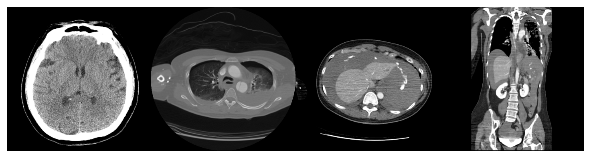
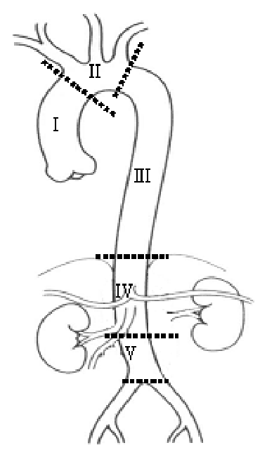
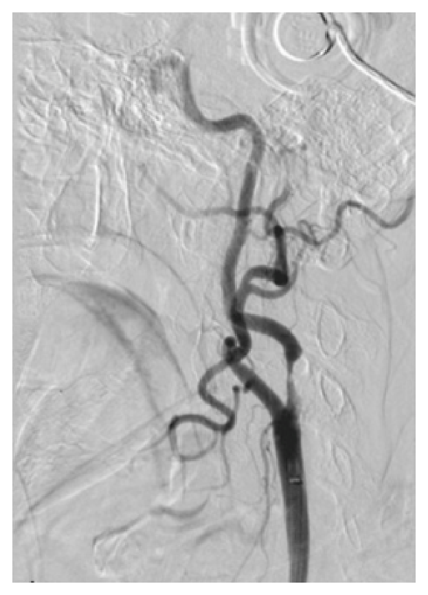
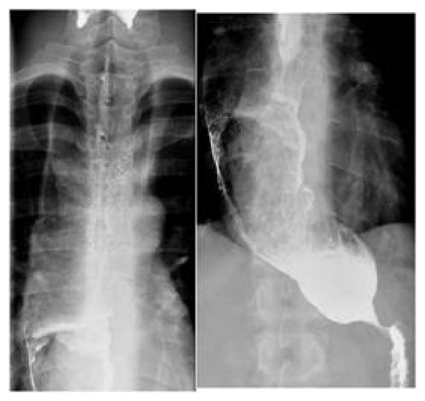
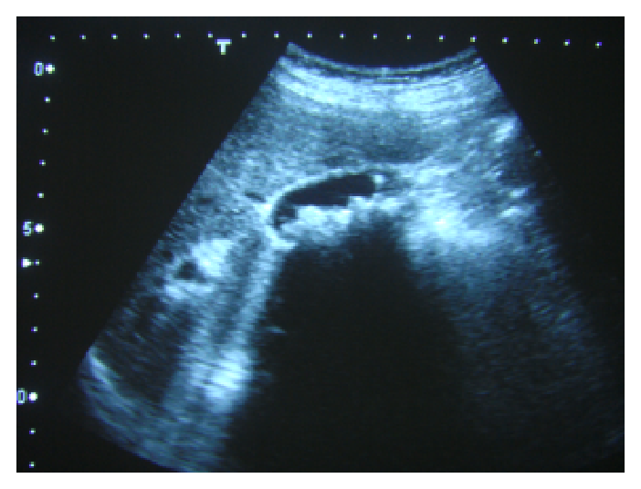
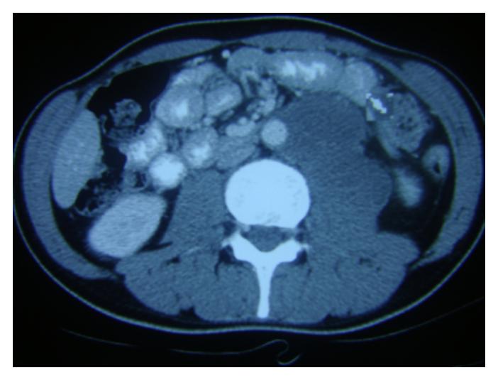

111 年第 1 次醫師醫學（五）（包括外科、骨科、泌尿科等科目及其相關臨床實例與醫學倫理）試題與答案
這一頁是民國 111 年第 1 次醫師醫學（五）（包括外科、骨科、泌尿科等科目及其相關臨床實例與醫學倫理）的整份歷屆試題，共 80 題，題目與標準答案出自考選部「國家考試試題及測驗式試題答案」開放資料，其中 80 題附有詳解。以下逐題列出題幹、選項與答案；要計時作答或記錄成績，請用線上練習。
考選部原始場次代碼：111020
線上作答這一科 →
全部 80 題
第 1 題
下列敘述，何者正確？
- （A）病人從上消化道或腹瀉大量流失碳酸氫鹽（bicarbonate）時，會造成鹼血症（alkalemia）
- （B）醫源性呼吸性酸中毒（iatrogenic respiratory acidosis）常見的原因之一是氣管插管後的呼吸器過度機械性通氣（mechanical ventilation）
- （C）敗血性休克（septic shock）病人會有代謝性鹼中毒（metabolic alkalosis）
- （D）快速靜脈輸注大量等張氯化鈉溶液（isotonic sodium chloride solutions）時，會發生代謝性酸血症（metabolicacidemia）
答案：（D）
詳解與考點
正解：「大量快速輸注等張氯化鈉」。0.9% 氯化鈉提供相對高的氯離子負荷，會降低強離子差並促使血中碳酸氫鹽下降，造成高氯性代謝性酸血症（hyperchloremic metabolic acidemia），故選 D。
A：從上消化道流失胃酸通常造成代謝性鹼中毒；但腹瀉大量流失碳酸氫鹽會造成代謝性酸中毒，兩種情境不能一概而論，故錯。
B：呼吸器過度通氣會排出過多二氧化碳，造成呼吸性鹼中毒；醫源性呼吸性酸中毒反而較見於低通氣，故錯。
C：敗血性休克常因組織灌流不足與乳酸累積出現代謝性酸中毒，而非代謝性鹼中毒，故錯。
本題考點：高氯性代謝性酸中毒（hyperchloremic metabolic acidosis）——可見於碳酸氫鹽流失與大量氯化鈉輸注；呼吸性酸鹼失衡（respiratory acid-base disorder）——由肺泡通氣改變二氧化碳排出。
第 2 題
絞刑骨折（hangman's fracture）是指下列何者？
- （A）disruption of C1 ring in multiple locations ; blow-out ring
- （B）odontoid fracture, type II : through base
- （C）odontoid fracture, type I : tip of odontoid
- （D）bilateral C2 pedicles with spondylolisthesis
答案：（D）
詳解與考點
正解：絞刑骨折的關鍵是 C2 椎弓根或椎弓根間部雙側骨折，常伴 C2 相對 C3 前移，即創傷性脊椎滑脫（traumatic spondylolisthesis）。因此 bilateral C2 pedicles with spondylolisthesis 符合定義，故選 D。
A：C1 環在多處中斷的爆裂環骨折是 Jefferson fracture，並非 hangman's fracture。
B：齒突基部骨折是 type II odontoid fracture，病灶位於 C2 齒突，與雙側 C2 椎弓根骨折不同。
C：齒突尖端骨折是 type I odontoid fracture，同樣不是絞刑骨折。
本題考點：絞刑骨折（hangman's fracture）——C2 雙側椎弓根／椎弓根間部骨折合併 C2-3 滑脫；齒突骨折（odontoid fracture）——依骨折位置分型，須與 C2 後方結構骨折區分。
第 3 題
在臺灣，目前下列何者不適合作為腦死器官的捐贈者？
- （A）血清中B型肝炎病毒（hepatitis B virus）表面抗原陽性之腦死病人
- （B）血清中巨細胞病毒（cytomegalovirus）抗體陽性之腦死病人
- （C）血清中人類嗜T淋巴球病毒（human T-lymphotropic virus）抗體陽性之腦死病人
- （D）血清中弓漿蟲（toxoplasma）抗體陽性之腦死病人
答案：（C）
詳解與考點
正解：腦死器官捐贈者的傳染病篩檢。人類嗜 T 淋巴球病毒（HTLV）可經器官移植傳播，受贈者可能發生嚴重感染相關疾病；題目所採臺灣篩檢原則下，HTLV 抗體陽性者不適合作為捐贈者，故選 C。這類捐贈適格性受現行感染篩檢與器官別政策影響。
A：B 型肝炎表面抗原陽性不必然使所有器官捐贈一律不可行，可能依器官、受贈者感染狀態與預防策略進行風險配對，故非本題答案。
B：巨細胞病毒抗體陽性多代表既往暴露，移植時可依供受者血清狀態分層並採預防或監測，並非當然排除。
D：弓漿蟲抗體陽性也多是既往感染的血清學證據，可據供受者風險採取預防措施，並非絕對不能捐贈。
本題考點：器官捐贈者感染篩檢（donor infectious disease screening）——須評估感染傳播風險；HTLV（human T-lymphotropic virus）——可經移植傳播，是捐贈適格性的重要感染考量。
第 4 題
一位53歲女性駕駛小轎車與對側高速來車相撞，立刻被緊急送至第一級（Level I）創傷中心急救。到院時意識狀態清楚，主訴兩側胸部及腹部疼痛、兩側手腕及左下肢劇痛。理學檢查發現血壓80/50 mmHg、心跳115次/分、呼吸20次/分，給與氧氣5公升/分鐘使用後，動脈血氧飽和度可達98%；另左胸呼吸音減低，腹部微脹有明顯瀰漫性壓痛，雙側手腕變形及左股骨開放性骨折。經快速大量輸液治療後血壓上升至100/55 mmHg，故安排緊急全身顯影電腦斷層，結果如附圖。病人送回急救區後發現意識模糊，但對深痛刺激有反應，生命徵象為血壓60/40 mmHg、心跳125次/分、呼吸20次/分，動脈血氧飽和度無法偵測。下列何種醫療處置較為適當？

- （A）再次給予快速大量輸液後立即再安排一次腦部電腦斷層
- （B）立即雙側肋膜胸管置入並密切觀察
- （C）立即送病人至手術室接受緊急開胸及主動脈修補術
- （D）立即送病人至手術室接受緊急剖腹探查
答案：（D）
詳解與考點
正解：病人在短暫回應輸液後，再度進展為嚴重低血壓、心搏過速與意識惡化，屬於持續出血的失代償性創傷性休克。附圖腹部軸位與冠狀位可見左上腹脾臟不規則破裂，周圍及腹腔有大量液體，符合脾損傷合併腹腔內出血；此時已不適合繼續以影像檢查或觀察延誤止血。應立即剖腹探查以控制腹腔出血，故選 D。
A：再次大量輸液只能暫時維持灌流，無法處理持續性腹腔出血；病人已有已完成的腦部 CT，且目前休克優先處置是止血，不應為重複腦部 CT 延誤手術。
B：左胸呼吸音下降及胸部 CT 的左側胸腔積液確實可考慮肋膜胸管處置；但附圖更顯示脾臟破裂與大量腹腔內出血，且病人已呈深度失代償性休克。單純雙側胸管置入後觀察，無法控制主要的腹腔出血來源。
C：緊急開胸及主動脈修補適用於明確胸主動脈損傷或胸腔內無法控制的大量出血；附圖並未顯示需要主動脈修補的明確依據，反而可見腹腔內出血的來源，因此不應優先採取開胸手術。
本題考點：創傷性出血性休克（traumatic hemorrhagic shock）須以快速控制出血為優先；脾損傷（splenic injury）合併血流動力學不穩定時，應採緊急剖腹探查（emergency laparotomy）；創傷處置依生理狀態決定，失代償病人不可因重複影像檢查延誤止血。
第 5 題
下列何項不是肝臟移植之適應症？
- （A）primary biliary cirrhosis
- （B）hepatocellular carcinoma
- （C）biliary atresia
- （D）liver cirrhosis due to heart failure
答案：（D）
詳解與考點
正解：肝臟移植是用於不可逆肝功能衰竭、特定肝膽疾病或符合條件的肝腫瘤。心衰竭造成的鬱血性肝硬化，其根本問題在心臟循環衰竭；單獨肝臟移植無法矯正持續的心臟病因，因此不是典型肝移植適應症，故選 D。
A：原發性膽汁性肝硬化（primary biliary cirrhosis）進展至末期肝病時，可為肝臟移植適應症。
B：肝細胞癌（hepatocellular carcinoma）若腫瘤範圍與肝功能符合選擇條件，可接受肝臟移植，故非答案。
C：膽道閉鎖（biliary atresia）可導致兒童進行性膽汁鬱積與肝硬化，是兒童肝臟移植的重要適應症。
本題考點：肝臟移植（liver transplantation）——用於末期肝病與符合條件的肝細胞癌；鬱血性肝病（congestive hepatopathy）——治療須處理心臟血流動力學病因。
第 6 題
下列何者並非術後發生低血鈉症（hyponatremia）時的常見症狀？
- （A）頭痛
- （B）心跳加速
- （C）噁心嘔吐
- （D）虛弱疲乏
答案：（B）
詳解與考點
正解：低血鈉症使血漿滲透壓下降，水分進入腦細胞可引起腦水腫相關症狀，如頭痛、噁心嘔吐、疲乏、意識改變或痙攣。心跳加速不是低血鈉症的典型神經消化道症狀，故選 B。
A：頭痛可反映低血鈉造成的腦水腫，是常見症狀之一，故非答案。
C：噁心嘔吐常見於有症狀的低血鈉症，尤其濃度快速下降時，故非答案。
D：虛弱疲乏可見於電解質失衡與低血鈉症，故敘述正確。
本題考點：低血鈉症（hyponatremia）——臨床表現主要與低滲透壓造成的腦水腫有關；術後低血鈉（postoperative hyponatremia）——須留意水分調節改變與神經學症狀。
第 7 題
車禍現場發現一受傷中年男性病人，中等身材，身下一灘血面積約0.2平方公尺，病人心跳每分鐘125下，脈搏微弱，血壓為75/40 mmHg，意識清醒但呈現混亂，該病人最可能的失血量為下列何者？
- （A）＜500 mL
- （B）800 mL
- （C）1,800 mL
- （D）3,000 mL
答案：（C）
詳解與考點
正解：心跳 125 次／分鐘、脈搏微弱、血壓 75/40 mmHg 且意識混亂，符合嚴重失血性休克的生理表現；成人約失血 30%～40% 時可見明顯低血壓與精神狀態改變。以中等體型成人血容量約 5 L 估計，30%～40% 約為 1,500～2,000 mL，最接近 1,800 mL，故選 C。
A：＜500 mL 通常不足以造成如此顯著的低血壓、脈搏微弱及意識混亂，故錯。
B：800 mL 雖可出現心跳加快，但與本題嚴重低血壓及意識混亂相比，失血程度較不足。
D：3,000 mL 約相當於極大量失血，常伴更深度意識障礙或瀕死狀態；本題仍清醒但混亂，較符合前一級失血範圍。
本題考點：失血性休克（hemorrhagic shock）——以心跳、血壓、脈搏與意識評估灌流不足；出血分級（hemorrhage classification）——30%～40% 血容量流失常出現低血壓與精神狀態改變。
第 8 題
面對一位胸腔穿刺傷的病患，下列那些狀況須考慮手術探查治療？①一置入胸管立刻流出1,500 mL鮮血 ②超音波顯示有心包填塞（pericardial tamponade） ③開放式氣胸 ④兩側胸腔皆疑似受傷 ⑤胸管內除血液外同時有少量氣體溢出
- （A）①②④
- （B）③④⑤
- （C）①②③
- （D）①②⑤
答案：（C）
詳解與考點
正解：穿刺性胸傷需要手術探查的線索是持續或大量胸腔出血、心包填塞，以及需立即處置的開放性胸部傷。胸管立即流出 1,500 mL 鮮血提示大量血胸；超音波心包填塞提示心臟損傷；開放性氣胸亦可能需手術性傷口處理，因此組合為①②③，故選 C。
A：①與②均是重大手術警訊，但④雙側疑似胸傷本身先應完成評估與適當雙側胸管處置，並非單獨構成探查指徵，故組合不對。
B：③可需處置，但④與⑤不等於手術探查指徵；胸管有少量氣體溢出常可先以胸管引流與觀察處理。
D：⑤的少量氣體漏出是穿刺性肺傷常見表現，若非持續大量漏氣或無法復張，不能與①②並列為立即探查理由。
本題考點：大量血胸（massive hemothorax）——胸管初始大量鮮血引流提示胸腔內重大出血；心包填塞（pericardial tamponade）——穿刺傷病人須迅速辨識並處置。
第 9 題
59歲無特定病史男性，被診斷罹患無遠處轉移的結腸癌，手術後病理結果為pT3N1。以目前的治療指引應建議病人接受下列何項治療？
- （A）追蹤
- （B）oxaliplatin為主的化學治療（FOLFOX）
- （C）irinotecan為主的化學治療（FOLFIRI）
- （D）須加上標靶藥物（VEGF或EGFR inhibitor）
答案：（B）
詳解與考點
正解：pT3N1 結腸癌表示腫瘤穿過肌層進入周圍組織，且已有區域淋巴結轉移，屬第 III 期結腸癌。根治手術後標準方向是含 oxaliplatin 的輔助化學治療，例如 FOLFOX，以降低復發風險，故選 B。
A：單純追蹤較適用於無淋巴結轉移的部分早期病例；N1 已表示第 III 期，僅追蹤不足。
C：FOLFIRI 常用於轉移性大腸癌等特定情境，並非 pT3N1 術後典型的首選輔助方案。
D：VEGF 或 EGFR 抑制劑在轉移性疾病的系統治療中有角色，但不是已完全切除第 III 期結腸癌的常規輔助治療；它看似積極，卻未因此改善此情境的標準術後處置。
本題考點：第 III 期結腸癌（stage III colon cancer）——任何區域淋巴結陽性即須考慮術後輔助治療；FOLFOX——含 oxaliplatin 的輔助化學治療方案。
第 10 題
有關大腸直腸的胚胎發育，下列敘述何者錯誤？
- （A）前腸衍生結構（foregut-derived structures）的主要血液供應來源為腹腔動脈（celiac artery）
- （B）中腸衍生結構（midgut-derived structures）是從近端空腸（proximal jejunum）到遠端橫結腸（distal transversecolon）
- （C）肛門內括約肌（internal anal sphincter）是從直腸（rectum）的環形肌肉層（circular muscle layer）延伸形成
- （D）約在胚胎發育第6週，泌尿生殖膈（urogenital septum）往尾部移行（caudal migration）而分隔開消化道及生殖泌尿道
答案：（B）
詳解與考點
正解：官方答案為 B；中腸（midgut）自十二指腸乳頭遠端開始，經小腸、盲腸、升結腸與橫結腸近端約三分之二，至橫結腸的脾彎曲附近；並不是從近端空腸才開始，也不是延至遠端橫結腸，故（B）錯誤。惟（D）標示的 urogenital septum 並非分隔泄殖腔的標準名稱，該構造應為尿直腸隔（urorectal septum）
A：前腸衍生結構主要由腹腔動脈供血，為正確的胚胎血管對應。
C：肛門內括約肌是直腸環形平滑肌向下增厚延續形成，敘述正確。
D：分隔泄殖腔、形成腹側泌尿生殖竇與背側肛直腸管者為尿直腸隔（urorectal septum）；題幹所用 urogenital septum 名詞不精確，為本題具體爭議。
本題考點：原腸分段（primitive gut divisions）——前腸、中腸、後腸各有特定衍生器官與血管供應；尿直腸隔（urorectal septum）——分隔泄殖腔的胚胎構造。
第 11 題
有關大腸直腸的生理敘述，下列何者錯誤？
- （A）colonic microflora可幫助維持epithelial integrity及nutritive function
- （B）Bacteroides species約占大腸細菌的三分之二
- （C）colonic microflora幫助人體行urea recycling，有助於liver failure之病人
- （D）大腸吸收面積約900 cm2，可幫忙再吸收大量水分
答案：（C）
詳解與考點
正解：大腸菌叢可代謝尿素中的氮並影響腸肝氮循環；在肝衰竭時，腸道細菌將尿素轉為氨反而可能增加氨負荷與肝性腦病風險，不能說有助於肝衰竭病人。因此（C）錯誤，故選 C。
A：正常大腸菌叢有助維持腸道上皮屏障與營養代謝功能，敘述正確。
B：Bacteroides 是大腸中重要且占比很高的厭氧菌屬，約占三分之二是本題採用的概略描述，故非答案。
D：大腸具有相當大的吸收表面，能再吸收大量水分與電解質，敘述正確。
本題考點：大腸菌叢（colonic microflora）——參與上皮屏障與代謝功能；腸肝氮循環（gut-liver nitrogen metabolism）——腸道產氨在肝衰竭時可能加重肝性腦病。
第 12 題
一位40歲男性至急診就診主訴解血便兩日，到院時意識清楚，體溫為攝氏36.5度，心跳每分鐘120次，呼吸次數每分鐘26次，血壓90/56 mmHg。有關後續處置，下列何者較不適宜？
- （A）完整的病史詢問及目前用藥諮詢，應包含患者過去有無接受過大腸鏡息肉切除或目前正在服用抗凝血劑等；理學檢查應包含肛門檢查
- （B）建立輸液管路並給與輸液，行血型配對及相關血液檢查
- （C）可考慮幫患者置放鼻胃管或是安排上消化道鏡檢查
- （D）告知患者相關手術風險，聯絡手術室準備行緊急手術止血
答案：（D）
詳解與考點
正解：血便合併心跳 120 次／分鐘、呼吸 26 次／分鐘與血壓 90/56 mmHg，先視為血流動力不穩的腸胃道出血。初期重點是復甦、建立靜脈管路、抽血與找出出血來源；尚未完成穩定與定位，就直接準備緊急手術止血不適宜，故選 D。
A：病史須詢問先前息肉切除、抗凝血藥等出血線索，並做肛門檢查以確認出血情形，屬適當初步評估。
B：建立輸液管路、輸液、血型配對與血液檢查是處理不穩定出血病人的優先措施，故正確。
C：血便未必完全來自下消化道；置放鼻胃管或評估上消化道內視鏡可協助判斷上消化道來源，尤其在血流動力不穩時是合理考慮。
本題考點：腸胃道出血復甦（gastrointestinal bleeding resuscitation）——先處理氣道、循環與輸血準備；血便（hematochezia）——大量上消化道出血亦可能快速通過腸道而表現為血便。
第 13 題
有關腹腔鏡闌尾切除手術，下列敘述何者錯誤？
- （A）年長病患比年輕病患有較高比例改為開腹手術
- （B）年長病患比年輕病患有較高手術相關併發症
- （C）年長病患比年輕病患有較高的感染相關併發症
- （D）年長病患比年輕病患有較高機會發現複雜闌尾炎或其他病理表現
答案：（C）
詳解與考點
正解：題目比較年長與年輕病人的腹腔鏡闌尾切除結果。年長者常有較高共病、延遲診斷及複雜闌尾炎比例，因此改開腹、整體手術相關併發症與發現其他病理的機會可較高；但不能概括說感染相關併發症必然較高，故（C）錯誤。
A：複雜發炎、沾黏或解剖困難在年長者較常見，可能提高改為開腹手術的比例，故非答案。
B：高齡與共病使整體手術相關風險上升，敘述符合一般臨床趨勢。
D：年長者闌尾炎較可能為複雜型，且須注意腫瘤等其他病理原因，故此敘述正確。
本題考點：高齡闌尾炎（appendicitis in older adults）——常見延遲診斷與複雜疾病；腹腔鏡闌尾切除（laparoscopic appendectomy）——需依術中安全性決定是否轉開腹。
第 14 題
關於自然孔洞手術（natural orifice transluminal endoscopic surgery, NOTES）的敘述，下列何者錯誤？
- （A）自然孔洞手術（NOTES）在技術上會比傳統內視鏡手術增加醫師的心理壓力且學習曲線較長
- （B）經口內視鏡食道肌肉切開手術（POEM）可以減少腹部創傷及減少對食道胃接合處（gastroesophagealjunction）的破壞
- （C）自然孔洞手術（NOTES）從臨床手術上顯示傷口較少、疼痛較少及失能較少等優點
- （D）於肛門距離（anal verge）大於25公分的腫瘤仍可藉由經肛門內視鏡手術（TEMS）予以切除治療
答案：（D）
詳解與考點
正解：TEMS 對直腸腫瘤位置的可及範圍。經肛門內視鏡手術（TEMS）主要用於中低位直腸病灶，受器械長度、視野與骨盆解剖限制；距肛門緣超過 25 cm 的腫瘤通常不適合以 TEMS 切除，因此（D）錯誤，故選 D。
A：NOTES 需經自然孔洞進入並建立新的操作方式，技術挑戰較高、學習曲線較長，敘述合理。
B：POEM 由內視鏡經口完成肌肉切開，可避免腹壁切口，並減少直接破壞胃食道接合處周邊結構，故非答案。
C：NOTES 理論與臨床發展的優點包括減少腹壁傷口與疼痛；它看似能取代所有手術，但實際適應症仍受技術與安全性限制，題幹的概括優點本身並非錯誤。
本題考點：自然孔洞經腔內視鏡手術（NOTES）——經自然孔洞進入以減少腹壁創傷；經肛門內視鏡手術（TEMS）——適用於可由肛門安全到達的直腸病灶。
第 15 題
關於腦動脈瘤破裂出血後的腦血管痙攣（cerebral vasospasm），下列敘述何者錯誤？
- （A）好發於腦動脈瘤破裂出血後的1～5天
- （B）Hunt and Hess clinical grading scale越高，發生腦血管痙攣的機會越高
- （C）CT上基底腦池的出血量越多，發生腦血管痙攣的機會越高
- （D）可以用hemodynamic augmentation的方式治療腦血管痙攣
答案：（A）
詳解與考點
正解：動脈瘤性蜘蛛膜下腔出血後血管痙攣的時間窗。腦血管痙攣通常在出血後數日才開始出現，常於約第 4～14 天較明顯，並非好發於第 1～5 天，故（A）錯誤。確切高峰與處置策略會受臨床時點及現行治療流程影響。
B：Hunt and Hess 臨床分級越高通常代表初始出血與病情較嚴重，發生遲發性腦缺血與血管痙攣的風險也較高，故非答案。
C：基底腦池血量愈多代表蜘蛛膜下腔血液負荷較大，是血管痙攣的重要風險線索，故正確。
D：hemodynamic augmentation 可在選定的症狀性血管痙攣病人中用於改善腦灌流；它看似只是在提高血壓，但須在避免高血容量等風險下個別評估，敘述並非錯誤。
本題考點：腦血管痙攣（cerebral vasospasm）——動脈瘤性蜘蛛膜下腔出血後的遲發性缺血併發症；Hunt and Hess scale——評估蜘蛛膜下腔出血臨床嚴重度；hemodynamic augmentation——改善選定病人腦灌流的治療策略。
第 16 題
29歲女性因為騎摩托車發生車禍導致頭部外傷住院，入院診斷是右側硬腦膜下出血（subdural hemorrhage）。因為血塊厚度為0.2公分，而且昏迷指數14分，所以僅用降腦壓藥（mannitol）控制腦部水腫。深夜11點時病房護理師報告值班醫師病人癲癇發作，當值班醫師趕到時病人已經持續抽搐3分鐘。下列敘述何者錯誤？
- （A）病人雙眼可能偏向右側（forced eye deviation to right）
- （B）這時考慮使用的第一線藥物是propofol
- （C）如果給與第一線藥物1分鐘後癲癇仍持續發作，則考慮給與第二線用藥
- （D）如果癲癇持續5分鐘以上，則要考慮插管予以完全鎮靜
答案：（B）
詳解與考點
正解：官方答案為 B；急性持續抽搐的第一線通常為速效 benzodiazepine，以儘快終止發作；propofol 雖可在難治性發作或插管後鎮靜中使用，卻不是此情境的常規第一線藥物，故官方答案為 B。惟（C）、（D）各以 1 分鐘與 5 分鐘設定固定升級與插管時點，並非通用急救準則；須依第一線反應、呼吸循環狀態與是否進入難治性癲癇決定
A：局灶性癲癇發作可出現強迫性眼偏移（forced eye deviation）；眼偏方向須結合發作起始腦區判讀，不能僅由硬腦膜下出血的位置單獨決定。因此「可能」出現右偏並非足以判為錯誤的敘述。
C：持續抽搐達 5 分鐘即應開始第一線 benzodiazepine 治療；後續第二線藥物的時點應依第一線反應迅速決定，不能以給藥後 1 分鐘作為通用門檻，為本題具體爭議。
D：氣道控制與麻醉鎮靜應依氧合、通氣、氣道保護、第一線反應及難治性狀態決定；不能僅因抽搐達 5 分鐘即一律插管完全鎮靜，為本題具體爭議。
本題考點：持續性癲癇（status epilepticus）——急性處置先以速效 benzodiazepine 終止發作，再視反應升級抗癲癇藥物與氣道處置；難治性癲癇（refractory status epilepticus）可能需要麻醉藥物與插管監測。
第 17 題
下列受壓性神經病變（entrapment neuropathy）與相關神經之組合，何者錯誤？
- （A）橫腕韌帶（transverse carpal ligament）－正中神經（median nerve）
- （B）蓋用氏隧道（Guyon's canal）－橈神經（radial nerve）
- （C）腓骨頭（fibular head）－腓神經（peroneal nerve）
- （D）踝管（tarsal tunnel）－脛神經（tibial nerve）
答案：（B）
詳解與考點
正解：Guyon's canal 的受壓神經。Guyon's canal 位在手腕尺側，是尺神經（ulnar nerve）通過的通道；橈神經不走行於此，故錯誤組合為 B。
A：正中神經（median nerve）在腕隧道內受橫腕韌帶（transverse carpal ligament）覆蓋與壓迫，這正是腕隧道症候群的解剖基礎，組合正確。
C：腓總神經（common peroneal nerve）繞過腓骨頭（fibular head）處表淺，容易因壓迫或外傷受損；選項以腓神經概稱此處受壓神經，方向正確。
D：踝管（tarsal tunnel）內的主要神經為脛神經（tibial nerve），其受壓可造成足底感覺異常，組合正確。
本題考點：受壓性神經病變（entrapment neuropathy）——腕隧道壓迫正中神經、Guyon's canal 壓迫尺神經、腓骨頭易傷及腓神經、踝管壓迫脛神經。
第 18 題
頭部外傷患者被送至加護病房，因意識不清給與裝置腦壓監視器，今測得其血壓為150/90 mmHg，顱內壓為25 mmHg，則其腦灌流壓（cerebral perfusion pressure, CPP）為多少mmHg？
- （A）105
- （B）95
- （C）90
- （D）85
答案：（D）
詳解與考點
正解：腦灌流壓須先由收縮壓與舒張壓算出平均動脈壓（mean arterial pressure, MAP），而不是直接拿收縮壓相減。MAP＝（150+2×90）÷3=110 mmHg；CPP=MAP-ICP=110-25=85 mmHg，故選 D。
A：105 mmHg 相當於以較高的動脈壓估算後再扣除顱內壓，沒有依 MAP 的加權公式計算，故錯。
B：95 mmHg 不是本題 MAP 110 mmHg 扣除 ICP 25 mmHg 的結果，計算不符。
C：90 mmHg 亦非 CPP=MAP-ICP 的正確代入結果；此題最強誘答是直接以收縮壓或未正確加權的血壓代替 MAP，因而算出錯誤數值。
本題考點：腦灌流壓（cerebral perfusion pressure, CPP）——CPP=MAP-ICP；平均動脈壓（mean arterial pressure, MAP）可用（SBP+2×DBP）÷3 估算。
第 19 題
下列那種疾病常屬於後天發生的？
- （A）動靜脈畸形（arteriovenous malformation）
- （B）毛細血管擴張（capillary telangiectasia）
- （C）腦部漿果動脈瘤（cerebral berry aneurysm）
- （D）腦部靜脈異常（venous anomaly）
答案：（C）
詳解與考點
正解：「常屬後天發生」。腦部漿果動脈瘤（cerebral berry aneurysm）通常是血管壁在分叉處長期血流動力學壓力與退化變化下形成的囊狀動脈瘤，臨床上多視為後天性病變，故選 C。
A：動靜脈畸形（arteriovenous malformation）是血管發育異常，通常被視為先天性病變，故非本題答案。
B：毛細血管擴張（capillary telangiectasia）多屬低流量的先天性血管畸形，常偶然發現，並非典型後天病變。
D：腦部靜脈異常（venous anomaly）通常指發育性靜脈異常（developmental venous anomaly），反映靜脈引流發育的變異，屬先天性範疇。
本題考點：腦血管病變（cerebrovascular lesions）——動靜脈畸形、毛細血管擴張與發育性靜脈異常多與血管發育異常相關；囊狀漿果動脈瘤常為後天形成。
第 20 題
有關腦脊髓液之敘述，下列何者錯誤？
- （A）由脈絡叢（choroid plexus）產生
- （B）產生速率約為0.66 mL/kg/hr（40 c.c./hr）
- （C）少部分會進到脊髓腔循環
- （D）由蜘蛛膜絨毛（arachnoid villi）吸收
答案：（B）
詳解與考點
正解：腦脊髓液（cerebrospinal fluid, CSF）的正常生成速率。成人 CSF 每日生成量約數百 mL，換算每小時約20 mL左右；選項（B）所列40 c.c./hr 明顯偏高，且將此數值寫成固定的體重換算值並不恰當，故為錯誤敘述。
A：CSF 主要由腦室脈絡叢（choroid plexus）分泌產生，敘述正確。
C：CSF 除在腦室與顱內蛛網膜下腔循環外，也會進入脊髓周圍的蛛網膜下腔循環，因此此敘述正確。
D：CSF 的主要回流途徑是經蜘蛛膜絨毛（arachnoid villi）進入靜脈系統，敘述正確。
本題考點：腦脊髓液循環（cerebrospinal fluid circulation）——CSF 主要由脈絡叢生成、在腦室與蛛網膜下腔循環，並主要經蜘蛛膜絨毛回吸收；生成速率須與總日生成量相符。
第 21 題
關於燒燙傷的傷口感染，下列敘述何者正確？
- （A）全身性預防性抗生素的使用，極為重要
- （B）初期的感染菌株，多為革蘭氏（Gram stain）陰性菌
- （C）初期的傷口，需要使用有強穿透力的抗生素藥膏，如磺胺銀（silver sulfadiazine）藥膏，以穿透焦痂
- （D）磺胺米隆（mafenide acetate 11%）藥膏，可能造成代謝性酸中毒
答案：（D）
詳解與考點
正解：mafenide acetate 的全身性不良反應。磺胺米隆（mafenide acetate）可抑制碳酸酐酶（carbonic anhydrase），增加碳酸氫鹽流失，因此可能導致代謝性酸中毒，故選 D。
A：燒燙傷傷口的感染預防以清創、傷口照護與局部抗微生物治療為主；常規全身性預防性抗生素未必有益，還可能增加抗藥性與其他併發症，故此敘述不正確。
B：燒傷早期傷口常先由革蘭氏陽性皮膚菌叢定殖，後期才較常見革蘭氏陰性菌等院內病原；把初期直接說成多為革蘭氏陰性菌，時序判斷錯誤。
C：磺胺銀（silver sulfadiazine）是常用局部抗菌藥，但其對焦痂的穿透力有限；看似合理之處在於燒傷確實需局部抗菌處理，錯在把「強穿透焦痂」歸給磺胺銀。
本題考點：燒傷感染（burn wound infection）——早期與後期病原菌譜不同；局部抗菌藥物各有穿透性與不良反應，mafenide acetate 可引起代謝性酸中毒。
第 22 題
肉芽組織（granulation tissue）不包含下列何種細胞？
- （A）纖維母細胞（fibroblast）
- （B）巨噬細胞（macrophage）
- （C）淋巴細胞（lymphocyte）
- （D）血管內皮細胞（endothelial cells）
答案：（C）
詳解與考點
正解：肉芽組織的主要組成。修復期肉芽組織以新生微血管、纖維母細胞與細胞外基質為核心，巨噬細胞也持續參與調節修復；淋巴細胞並非其典型主要組成，故選 C。
A：纖維母細胞（fibroblast）負責合成膠原蛋白與細胞外基質，是肉芽組織的重要細胞，故非答案。
B：巨噬細胞（macrophage）能清除壞死組織、分泌調控修復的訊號分子，持續參與傷口癒合，故非答案。
D：血管內皮細胞（endothelial cells）參與血管新生（angiogenesis），形成肉芽組織特有的豐富微血管，故非答案。
本題考點：傷口癒合（wound healing）——肉芽組織由血管新生（angiogenesis）、纖維母細胞與細胞外基質構成，巨噬細胞協調發炎與修復。
第 23 題
關於腕隧道症候群（carpal tunnel syndrome）下列何者正確？
- （A）伸展動作會加重症狀
- （B）手術方式是切斷腕橫韌帶（transverse carpal ligament）
- （C）手術患者一定會有魚際肌（thenar muscle）的萎縮
- （D）手術無效才改以副木治療
答案：（B）
詳解與考點
正解：腕隧道症候群的減壓手術。腕隧道內的正中神經受橫腕韌帶（transverse carpal ligament）壓迫，手術治療的目的就是切開該韌帶以增加隧道容積、解除壓迫，故選 B。
A：腕關節屈曲或伸展都可能增加腕隧道壓力，但典型誘發姿勢與測試不能簡化成只有「伸展動作」會加重症狀；此敘述過度絕對，故不正確。
C：魚際肌萎縮代表較嚴重或慢性的正中神經運動支受損，並非每位接受手術的患者都一定會有，故錯。
D：副木固定常是輕症或早期症狀的保守治療選擇，並非手術無效後才使用；看似合理之處在於手術與副木都可治療本病，錯在治療順序顛倒。
本題考點：腕隧道症候群（carpal tunnel syndrome）——正中神經在腕隧道內受壓；保守治療可包括中立位副木，手術為切開橫腕韌帶（carpal tunnel release）。
第 24 題
下列關於皮膚移植（skin graft）之敘述，何者錯誤？
- （A）部分皮膚移植（split thickness skin graft）取皮時也會包含部分真皮層
- （B）全層皮膚移植（full thickness skin graft）取皮時應包含全部的真皮層
- （C）全層皮膚移植（full thickness skin graft）較不容易產生次發攣縮（secondary contracture）
- （D）頭皮生長快速，毛囊豐富，所以是理想的全層皮膚移植（full thickness skin graft）供皮區
答案：（D）
詳解與考點
正解：全層皮膚移植（full thickness skin graft, FTSG）的供皮區。頭皮雖毛囊豐富、生長快，卻不是理想的 FTSG 供皮區；全層取皮後供皮區通常需直接縫合，應選擇可安全關閉且能兼顧外觀的部位，故錯誤為 D。
A：部分皮膚移植（split thickness skin graft, STSG）包含表皮與部分真皮層，因保留部分真皮附屬器，供皮區可自行上皮化，敘述正確。
B：全層皮膚移植取得表皮及全部真皮，這正是其與 STSG 的定義差異，敘述正確。
C：FTSG 所含真皮較完整，因此移植後較不易產生次發攣縮（secondary contracture）；這是其在顏面、手部等重視外觀與活動部位的優點，敘述正確。
本題考點：皮膚移植（skin graft）——STSG 含部分真皮且供皮區可自行癒合；FTSG 含全部真皮、次發攣縮較少，但供皮區通常須直接關閉。
第 25 題
24歲男性騎機車自摔，造成顏面外傷（facial trauma）出血，被送到急診處理。有關顏面外傷的處置，下列敘述何者錯誤？
- （A）要先評估是否有大出血或顱內出血
- （B）生命威脅的大出血，是指3單位（unit）以上的失血或血比容（Hct）小於29%
- （C）一旦X光片確認有顏面骨骨折，應立即手術復位及固定
- （D）若撞及眼眶可能導致全盲及視神經壓迫或眼壓升高
答案：（C）
詳解與考點
正解：官方答案為 C；X 光確認顏面骨折不等於所有患者都應立刻復位固定，須先完成氣道、呼吸、循環與神經學評估，並依骨折型態、軟組織腫脹、眼部與其他合併傷決定手術時機，故官方答案為 C。惟（B）的 3 單位失血或 Hct <29% 未註明適用的顏面外傷定義與臨床情境，不能作為通用的生命威脅性出血門檻
A：顏面外傷可合併大量出血、上呼吸道阻塞或顱內傷，初步評估必須先確認是否有立即威脅生命的出血與腦傷，敘述正確。
B：嚴重出血應整合持續出血、血流動力學與血液學變化判定；「3 單位」與 Hct <29% 的精確門檻缺乏可直接套用的通用判準，為本題具體爭議。
D：眼眶外傷可造成視神經受壓、眼壓升高或眼球損傷並威脅視力，因此須及早檢查視力與眼部狀態，敘述正確。
本題考點：顏面外傷（facial trauma）——處置遵循創傷初級評估，先穩定生命徵象與排除顱內、眼部傷害；顏面骨折復位時機須依全身與局部狀況個別決定。
第 26 題
下列對瓣膜（主動脈瓣或二尖瓣）置換之敘述，何者錯誤？
- （A）置換機械性瓣膜（mechanical valve）之患者，一般建議需終身使用抗凝血藥物（warfarin）
- （B）機械性瓣膜（mechanical valve）比生物組織性瓣膜（bioprosthetic valve）有較長之使用期限
- （C）置換生物組織性瓣膜（bioprosthetic valve）之患者，建議術後3個月內必須使用抗凝血藥物（warfarin）
- （D）因生物組織性瓣膜（bioprosthetic valve）多從牛或豬等動物取得，術後必須終身使用抗排斥藥物（immunosuppressants），以免發生排斥現象
答案：（D）
詳解與考點
正解：官方答案為 D；生物組織性瓣膜（bioprosthetic valve）經處理後作為人工瓣膜使用，不會因為源自牛或豬就要求病人終身使用抗排斥藥物（immunosuppressants），故官方答案為 D。惟（C）的「必須」使用 warfarin 過度絕對；生物瓣術後早期抗栓是可依瓣膜位置、節律與出血風險考慮的策略，非所有病人一律必須
A：機械性瓣膜（mechanical valve）血栓風險較高，通常需要長期使用 warfarin 抗凝血，敘述正確。
B：機械性瓣膜通常較生物組織瓣膜耐久，這是年輕病人選擇時需與長期抗凝負擔一併衡量的特性，敘述正確。
C：生物組織瓣膜術後早期可考慮抗栓治療，但是否使用 warfarin 須依瓣膜位置、節律與出血風險個別決定；「3 個月內必須使用」過度絕對，為本題具體爭議。
本題考點：人工心臟瓣膜（prosthetic heart valve）——機械瓣耐久但多需長期抗凝；生物瓣不需免疫抑制，術後抗栓策略依瓣膜與病人風險個別化。
第 27 題
有關無幫浦不停跳冠狀動脈繞道手術（off-pump coronary artery bypass grafting, OPCAB）之敘述，下列何者錯誤？
- （A）是實行冠狀動脈繞道手術（coronary artery bypass grafting）的手術選項之一
- （B）理論上因無幫浦輔助下施行手術，所以包括傳統開心手術中之術後流血、神經認知功能不全、血栓栓塞、體液堆積及各器官暫時性的功能不全等各項併發症都可能減到最低的程度
- （C）因為可能發生之併發症較on-pump beating-heart bypass少，因此全世界大部分的冠狀動脈繞道手術，都採取off-pump coronary artery bypass grafting
- （D）在全世界大規模的研究中，OPCAB一年的存活率與再次需要介入性治療的機率，與有幫浦且停跳的冠狀動脈繞道手術比較起來，並未顯現其優越性
答案：（C）
詳解與考點
正解：OPCAB 不能因理論上少了心肺幫浦就推論已成為全球絕大多數的標準術式。無幫浦不停跳冠狀動脈繞道手術（off-pump coronary artery bypass grafting, OPCAB）是選項之一，但是否採用取決於病人血管、術者經驗與手術目標；「全世界大部分都採取」的絕對敘述錯誤，故選 C。
A：OPCAB 的確是冠狀動脈繞道手術（coronary artery bypass grafting, CABG）的手術方式之一，敘述正確。
B：避免心肺幫浦在理論上可減少部分與體外循環相關的發炎、出血與器官功能影響，這是 OPCAB 的潛在優點；但「可能減到最低」不表示每種併發症都必然較少。
D：大型比較研究並未一致顯示 OPCAB 在存活或再次介入治療上優於有幫浦停跳 CABG，故此敘述符合其沒有明確長期優越性的重點。不同研究、術者熟練度與病人選擇會影響結果。
本題考點：冠狀動脈繞道手術（CABG）——OPCAB 可避免部分體外循環影響，但適應症與成果須個別評估；長期臨床結局未顯示穩定優於傳統 on-pump CABG。
第 28 題
將主動脈分為五大部分，如附圖，則主動脈內氣球幫浦（intra-aortic balloon pump, IABP）置入後，球囊（intra-aortic balloon）最佳位置應於：

- （A）I
- （B）II
- （C）III
- （D）IV
答案：（C）
詳解與考點
正解：圖中 III 位於主動脈弓分支遠端、橫膈以上的降胸主動脈。IABP 的球囊尖端最佳位置應在左鎖骨下動脈開口遠端，並位於腎動脈開口近端，以避免阻塞腦部、上肢或腎臟灌流；因此應置於 III，故選 C。
A：I 為升主動脈區域，球囊若置於此處，位置過近心臟且可能干擾冠狀動脈與主動脈瓣相關構造，不是 IABP 的標準置放位置。
B：II 為主動脈弓及其分支附近。球囊置於此區可能遮蔽頭頸部或左上肢分支血流，增加腦部與上肢缺血風險，故不適當。
D：IV 位於橫膈以下、腎動脈附近的腹主動脈區域。球囊過低時可能影響腎動脈及內臟分支灌流，也無法維持應有的胸主動脈反搏效果，故非最佳位置。
本題考點：主動脈內氣球幫浦（intra-aortic balloon pump, IABP）定位；降胸主動脈（descending thoracic aorta）；球囊尖端應避開左鎖骨下動脈與腎動脈，以兼顧反搏效果及分支器官灌流。
第 29 題
80歲男性抽菸且合併高血壓、糖尿病病史，接受頸動脈血管攝影檢查之結果如附圖。則下列敘述何者錯誤？

- （A）診斷為外頸動脈（external carotid artery）狹窄
- （B）聽診時不一定聽得到頸動脈雜音（carotid bruit）
- （C）突發性狹窄同側暫時性失明（amaurosis fugax）為可能臨床表現之一
- （D）如接受頸動脈內膜摘除術（carotid endarterectomy），對有同側中風病史者，術後皆擁有較佳的防止再度中風效果
答案：（A）
詳解與考點
正解：官方答案為 A；圖中頸總動脈分叉後，可見通向顱內、頸段沒有分支的內頸動脈（internal carotid artery）近端出現明顯狹窄，另一支外頸動脈則可見頸部動脈分支。因此將病灶診斷為外頸動脈狹窄不正確，故選 A。
B：頸動脈雜音（carotid bruit）是湍流造成的聽診發現；嚴重狹窄時血流量可能已明顯下降，未必產生可聽見的雜音，故此敘述正確。
C：內頸動脈粥樣硬化斑塊可造成眼動脈的暫時性栓塞或低灌流，因而出現同側短暫單眼失明（amaurosis fugax），是可能的缺血性表現，故此敘述正確。
D：有同側中風或暫時性腦缺血病史者若已依狹窄程度與手術風險篩選為適合手術者，頸動脈內膜摘除術（carotid endarterectomy）可降低再發中風風險；但原句的「皆擁有較佳效果」未交代這些前提，字面過度概括。本題以 A 為官方答案，但 A、D 皆有可質疑之處。
本題考點：頸動脈分叉解剖（carotid bifurcation anatomy）——內頸動脈在頸段通常無分支，外頸動脈則有多個頸部支；症狀性內頸動脈狹窄（symptomatic internal carotid artery stenosis）可表現為暫時性腦缺血或同側暫時性單眼失明；頸動脈內膜摘除術（carotid endarterectomy）的獲益須依症狀、狹窄程度及手術風險判定。
第 30 題
對剛出生之新生兒，下列何種病情無法用前列腺素E1（prostaglandin E1）暫時緩解臨床血氧下降（desaturation）及發紺（cyanosis）之危況，必須立即手術？
- （A）左心室發育不全症候群（hypoplastic left heart syndrome）
- （B）嚴重發紺之法洛氏四重症（cyanotic episode in tetralogy of Fallot）
- （C）嚴重阻塞之心下型全肺靜脈回流異常（obstructed infracardiac type total anomalous pulmonary venous return）
- （D）大動脈轉位合併心室中隔缺損（transposition of great arteries with ventricular septal defect）
答案：（C）
詳解與考點
正解：嚴重阻塞的心下型全肺靜脈回流異常（obstructed infracardiac type total anomalous pulmonary venous return, TAPVR）。此病的問題在肺靜脈回流受阻，造成嚴重肺靜脈鬱血與低氧；前列腺素 E1（prostaglandin E1, PGE1）維持動脈導管開放無法解除靜脈回流阻塞，必須緊急手術，故選 C。
A：左心室發育不全症候群（hypoplastic left heart syndrome）屬導管依賴性體循環病變，PGE1 維持動脈導管可作為術前暫時橋接，故非答案。
B：嚴重發紺的法洛氏四重症（tetralogy of Fallot）可因維持導管通暢而增加肺血流作暫時緩解，故非答案。
D：大動脈轉位（transposition of great arteries）需要血液混合，PGE1 維持動脈導管有助混合與氧合，可作術前暫時處置，故非答案。
本題考點：導管依賴性先天性心臟病（duct-dependent congenital heart disease）——PGE1 可維持動脈導管開放；阻塞型 TAPVR 的核心是肺靜脈回流阻塞，須緊急外科矯正。
第 31 題
關於縱隔腔炎之敘述，何者錯誤？
- （A）急性縱隔腔炎可因齒齦發炎導致
- （B）慢性縱隔腔炎常無法藉由手術治療，手術只是診斷用途或緩解併發症狀
- （C）硬化性或纖維性縱隔腔炎（sclerosing or fibrosing mediastinitis），常因慢性淋巴結發炎造成，如肺結核等引起
- （D）急性縱隔腔炎常因情況危急，生命徵象不穩定，給與抗生素治療即可改善，不需冒手術風險
答案：（D）
詳解與考點
正解：急性縱隔腔炎（acute mediastinitis）是高死亡風險的感染，不能只給抗生素而放棄感染源控制。除廣效抗生素外，常須依病因進行引流、清創或修補穿孔；選項（D）稱不需冒手術風險，錯誤為 D。
A：口腔與頸部感染，例如齒齦發炎，可能沿筋膜間隙向下擴散至縱隔而造成急性縱隔腔炎，敘述正確。
B：慢性縱隔腔炎常與纖維化、鈣化或重要血管氣道包埋有關，根治性手術未必可行；手術可能用於診斷或處理併發症，敘述正確。
C：硬化性或纖維性縱隔腔炎（sclerosing or fibrosing mediastinitis）可與慢性肉芽腫性淋巴結發炎相關，肺結核等感染是可能病因之一，敘述正確。
本題考點：縱隔腔炎（mediastinitis）——急性感染重點是早期抗生素加上感染源控制；纖維性縱隔腔炎可造成縱隔結構受壓，治療常著重併發症處置。
第 32 題
一位25歲年輕人和人爭吵，對方拿出水果刀刺向他的心窩，送至急診室，呈現休克狀況，醫師理學檢查發現劍突上方有1公分之傷口，兩側外頸靜脈鼓張，兩側呼吸聲一致，以下處置，那一項不適合？
- （A）立即做心臟超音波，以診斷是否有心包膜填塞症（cardiac tamponade）
- （B）考慮做心包膜腔穿刺術（pericardiocentesis）
- （C）若病人血壓已經量不出來，考慮立即開胸術（thoracotomy）
- （D）安排移動式胸部X光照射（portable chest X-ray）
答案：（D）
詳解與考點
正解：刺傷、休克、頸靜脈怒張且雙側呼吸音一致，強烈指向心包膜填塞（cardiac tamponade）。此時應立即依不穩定程度進行床邊超音波、減壓或緊急開胸；移動式胸部 X 光不能優先於救命處置，且會延誤治療，故不適合的是 D。
A：床邊心臟超音波可快速確認心包膜積液與填塞的血流動力學線索，若不延誤復甦，為適當處置。
B：心包膜腔穿刺術（pericardiocentesis）可作暫時減壓或特定情境下的救援，但穿刺傷合併不穩定循環仍須準備根本的外科止血，故非本題的不適合選項。
C：若已量不到血壓，代表瀕臨心跳停止的穿透性胸傷，須考慮立即復甦性開胸術（resuscitative thoracotomy），敘述正確。
本題考點：心包膜填塞（cardiac tamponade）——穿透性胸傷合併休克與頸靜脈怒張須優先處理阻塞性休克；床邊超音波與立即減壓／外科止血優先於非必要影像。
第 33 題
關於肺癌手術的敘述，下列何者正確？
- （A）早期的小細胞肺癌也不應該手術
- （B）對於早期stage IIB之前的肺癌，手術後不需要再加做化療
- （C）對於局部切除無法診斷的肺腫瘤，有時須做肺葉切除
- （D）有腦部轉移就不該做肺部腫瘤切除
答案：（C）
詳解與考點
正解：局部切除未能取得診斷時，外科有時須採較完整的肺葉切除（lobectomy）兼顧診斷與治療。對可疑肺腫瘤，若楔狀切除或術中病理無法確診，且病人肺功能允許，肺葉切除可能是合理選擇，故選 C。
A：早期小細胞肺癌（small cell lung cancer）在極少數經嚴格分期、局限且無淋巴結轉移的病例，可考慮手術合併全身治療；「也不應該手術」過度絕對，故錯。
B：可切除非小細胞肺癌的術後治療須依病理分期與風險決定，部分病人需要輔助化學治療，故不能說 stage IIB 之前一律不需要化療。
D：腦部轉移不必然排除所有肺部腫瘤切除；少數寡轉移病人經多專科評估後可採局部治療。看似合理之處在於廣泛轉移多以全身治療為主，錯在把它說成絕對禁忌。
本題考點：肺癌手術（lung cancer surgery）——切除與輔助治療取決於組織型態、分期、可切除性與病人狀態；寡轉移（oligometastatic disease）可能需要個別化局部治療。
第 34 題
下列何種術式非用於治療胃食道逆流？
- （A）Nissen fundoplication
- （B）Toupet fundoplication
- （C）Kocher fundoplication
- （D）Dor fundoplication
答案：（C）
詳解與考點
正解：胃食道逆流手術常以胃底摺疊（fundoplication）強化下食道括約肌區。Nissen、Toupet 與 Dor 都是不同方式的 fundoplication；Kocher fundoplication 並非用於治療胃食道逆流的標準胃底摺疊術式，故選 C。
A：Nissen fundoplication 為全周性胃底摺疊術，是治療胃食道逆流（gastroesophageal reflux disease, GERD）的常見術式，故非答案。
B：Toupet fundoplication 為後方部分胃底摺疊術，可用於 GERD，尤其在評估食道蠕動後選擇部分包覆時，故非答案。
D：Dor fundoplication 為前方部分胃底摺疊術，常與某些食道手術搭配，也可形成抗逆流屏障，故非答案。
本題考點：胃底摺疊術（fundoplication）——Nissen 為全周包覆，Toupet 與 Dor 為部分包覆；皆藉由重建食道胃交界的抗逆流屏障治療 GERD。
第 35 題
關於食道癌最新（stage、classification）之T，下列何者錯誤？
- （A）Tis；high-grade dysplasia
- （B）T1；tumor invades muscularis propria
- （C）T3；tumor invades adventitia
- （D）T4b；tumor invades trachea or aorta
答案：（B）
詳解與考點
正解：食道癌 T 分期依腫瘤侵犯深度判定。T1 是腫瘤侵犯固有層、黏膜肌層或黏膜下層，尚未侵犯肌層（muscularis propria）；侵犯肌層應為 T2，故選項（B）錯誤。題目稱「最新」分期，但分期系統可能隨版本更新；此處依其核心解剖侵犯層次判讀，故把握度從嚴。
A：Tis 對應高級別異生（high-grade dysplasia）或原位病變的概念，敘述正確。
C：T3 指腫瘤侵犯外膜（adventitia），為食道癌 T 分期的核心定義之一，敘述正確。
D：T4b 指侵犯無法安全切除的鄰近重要構造，例如氣管或主動脈，敘述正確。
本題考點：食道癌 T 分期（esophageal cancer T classification）——T1 限於黏膜／黏膜下層、T2 侵犯肌層、T3 侵犯外膜、T4 侵犯鄰近構造；T4b 代表侵犯重要不可切除構造。
第 36 題
下列何者非構成lower esophageal sphincter之解剖構造？
- （A）intrinsic musculature of distal esophagus
- （B）intra-abdominal pressure
- （C）sling fibers of the gastric cardia
- （D）crura of the diaphragm
答案：（B）
詳解與考點
正解：下食道括約肌（lower esophageal sphincter, LES）是一個由局部肌肉與周邊解剖支撐共同形成的抗逆流屏障，而非單一靜態壓力數值。腹內壓（intra-abdominal pressure）本身不是構成 LES 的解剖構造；過高時反而可促進逆流，故選 B。
A：遠端食道的內在肌肉（intrinsic musculature of distal esophagus）提供 LES 的主要平滑肌括約功能，屬其解剖基礎。
C：胃賁門的 sling fibers 可協助形成食道胃交界的瓣膜樣抗逆流機制，與 LES 功能相關。
D：橫膈腳（crura of the diaphragm）在食道裂孔周圍形成外在括約作用，尤其吸氣時協助增強抗逆流屏障，故非答案。
本題考點：下食道括約肌（lower esophageal sphincter, LES）——抗逆流屏障由遠端食道平滑肌、胃賁門斜走肌纖維與橫膈腳等共同構成；腹壓是影響逆流的生理因素，不是解剖構造。
第 37 題
對於何時應懷疑有胰臟癌（pancreatic cancer）的存在，下列敘述何者錯誤？
- （A）不明原因之體重減輕或長期腹部悶痛
- （B）沒有糖尿病家族史，而在50歲後發生糖尿病或莫名發生不易控制的高血糖
- （C）不明原因之老人胰臟炎
- （D）身體檢查有Murphy's sign時
答案：（D）
詳解與考點
正解：胰臟癌常見的是非特異性全身症狀、晚發糖尿病與不明原因胰臟炎，而 Murphy's sign 指向膽囊發炎的理學檢查。單憑 Murphy's sign 應優先思考急性膽囊炎等膽囊疾病，並非懷疑胰臟癌的典型線索，故錯誤為 D。
A：不明原因體重減輕與持續腹部不適可見於胰臟癌，尤其合併黃疸、食慾下降或背痛時更應提高警覺，敘述正確。
B：50歲後新發糖尿病，或既有血糖控制無故惡化，可能是胰臟癌的警訊之一；看似只是常見代謝疾病，錯過的是其發病年齡與病程改變的組合，故應進一步評估。
C：高齡者出現原因不明的胰臟炎時，須排除造成胰管阻塞的腫瘤，包含胰臟癌，敘述正確。
本題考點：胰臟癌（pancreatic cancer）警訊——不明原因體重減輕、晚發或惡化的糖尿病、無明確病因的高齡胰臟炎須提高警覺；Murphy's sign 主要反映膽囊發炎。
第 38 題
王先生56歲，預計2天後接受胰臟癌手術。作為外科手術隊的成員，你詢問王先生有無服用任何可能導致出血的藥物或草藥。得知王先生6個月前接受心臟手術，仍然在服用Plavix（clopidogrel）、aspirin、Norvasc（amlodipine）及Inderal來控制心臟術後的病情。另患者術前檢測的PT和aPTT值均在正常範圍內，你下一步要做什麼術前準備？
- （A）繼續準備2天後的手術，為手術準備新鮮血漿及紅血球
- （B）繼續準備2天後的手術，停止服用aspirin及Plavix（clopidogrel）
- （C）繼續準備2天後的手術，停止服用aspirin及Plavix（clopidogrel） ，並在術前給與低分子量肝素
- （D）告知主治醫師並暫停預定之手術
答案：（D）
詳解與考點
正解：6 個月前心臟手術後仍併用 clopidogrel 與 aspirin，且胰臟癌切除是高出血風險的非心臟手術。PT、aPTT 正常只反映凝血因子路徑，不能排除抗血小板藥造成的血小板功能抑制；雙重抗血小板治療也可能代表近期冠狀動脈介入後仍有血栓風險。手術日期僅剩 2 天，不能逕自停藥或以輸血替代評估，應告知主治醫師並暫停預定手術，待心臟科與外科共同衡量停藥及延後手術的風險，故選 D。
A：備妥新鮮血漿與紅血球不能消除 clopidogrel、aspirin 對血小板功能的影響；新鮮血漿主要補充凝血因子，PT、aPTT 正常時更不是針對此問題的處置。
B：停止 aspirin 與 clopidogrel 看似可降低出血，但距手術僅 2 天未必足以恢復血小板功能，且未先釐清心臟手術型態與停藥的缺血風險，不宜直接照原日期進行。
C：低分子量肝素是抗凝血藥，不能取代抗血小板藥對冠狀動脈血栓的保護，反而可能增加出血；這不是雙重抗血小板治療的常規橋接方式。
本題考點：圍手術期抗血小板治療（perioperative antiplatelet management）——正常 PT、aPTT 不代表血小板功能正常；雙重抗血小板治療病人的非緊急高風險手術，須先跨專科評估缺血與出血風險；血小板功能抑制（platelet inhibition）與凝血因子缺乏必須分辨。
第 39 題
一名25歲的女性患者主訴右下腹疼痛，下列那一項病史對鑑別診斷病因幫助最少？
- （A）月經週期及最近的性生活史
- （B）有無發燒、關節炎或腹部手術史
- （C）胃腸症狀的時間順序
- （D）有無藥物過敏史
答案：（D）
詳解與考點
正解：育齡女性的右下腹痛，鑑別診斷須優先釐清婦科、泌尿與腸胃病因及其急症。藥物過敏史雖攸關後續開藥與處置安全，通常不會改變右下腹痛的病因排序，因此對鑑別診斷幫助最少，故選 D。
A：月經週期與最近性生活史可提示懷孕、異位妊娠、骨盆腔發炎或卵巢相關疾病；在育齡女性腹痛的初步病史中很重要。
B：發燒可支持感染或發炎，關節炎可連結全身性發炎疾病，腹部手術史則提示沾黏性腸阻塞等可能，皆會改變鑑別診斷。
C：胃腸症狀出現的時間順序可協助區分闌尾炎、腸胃炎與腸阻塞等情況，例如疼痛與噁心、嘔吐何者先出現具有診斷價值。
本題考點：右下腹痛（right lower quadrant pain）的鑑別診斷——育齡女性須系統性詢問月經與性史；伴隨症狀和既往手術史可重排病因機率；治療安全資訊與診斷資訊的用途不同。
第 40 題
有關細菌性肝臟膿瘍的敘述，下列何者正確？
- （A）最常見的原因為肝動脈血液感染
- （B）在西方國家，主要是因為膽道惡性腫瘤造成阻塞合併感染；而在亞洲，則是以肝內結石造成的膽道感染為最主要的原因
- （C）外傷也會造成肝內膿瘍，主要是因為血塊或是壞死的組織沒有吸收造成的緣故，通常在受傷的3天內，病患發生突然的高燒不止，就需要進行鑑別診斷
- （D）超音波是主要的診斷工具。在超音波下，膿瘍為圓形或是卵圓形的高回音（hyperechoic）病徵，其診斷敏感性可以達到80-95%。唯獨對於某些不易判讀的解剖位置如肝頂（dome）不易確診
答案：（B）
詳解與考點
正解：題目採傳統外科教材的地域性病因對照：西方常強調膽道惡性阻塞合併感染，東亞則常強調肝內結石相關膽道感染，故選 B。此為歷史性概括；現代病因譜隨地區與年代而異，不能推論全亞洲均以肝內結石為主要病因。
A：細菌性肝膿瘍最常見的感染途徑並非肝動脈血行感染；膽道感染是更重要的來源，門靜脈播散亦可見於腹腔感染。
C：外傷後血腫或壞死組織可繼發感染形成膿瘍，但「通常在受傷後 3 天內突然高燒」過度絕對；感染形成的時間與傷勢、污染及引流狀況有關。
D：超音波可用於偵測與引導引流，但肝膿瘍影像外觀不固定，常可呈低回音或複雜回音，不是固定的高回音病灶；對肝頂等位置也可能受限。
本題考點：細菌性肝膿瘍（pyogenic liver abscess）——膽道感染與阻塞是常見病因；感染可經膽道、門靜脈或血行播散；腹部超音波（ultrasonography）有用但影像表現並非單一固定型態。
第 41 題
下列何種胃部變化與胃癌的癌前變化關聯最大？
- （A）hyperplastic polyp
- （B）chronic ulcer
- （C）atrophic gastritis
- （D）aberrant pancreas
答案：（C）
詳解與考點
正解：胃癌的「癌前變化」。慢性萎縮性胃炎會造成胃黏膜腺體流失，並可沿著腸化生、異生進展至腺癌，是胃癌的重要癌前背景，故選 C。
A：hyperplastic polyp 多與慢性胃炎背景相關，單一息肉本身通常不是最具代表性的胃癌癌前變化；其風險須看大小、異生與周邊黏膜。
B：慢性胃潰瘍須以切片排除已存在的惡性腫瘤，但潰瘍本身不是典型由良性病灶演變成胃癌的癌前序列。
D：aberrant pancreas 是胃壁內的異位胰臟組織，多為良性偶發發現，與一般胃腺癌的癌前變化關聯不大。
本題考點：胃癌癌前病變（precancerous lesions of gastric cancer）——慢性萎縮性胃炎（chronic atrophic gastritis）可進展為腸化生與異生；胃黏膜背景風險須與局部良性病灶區分。
第 42 題
陳先生40歲，持續出現胸悶、夜咳的現象，心臟及肺部檢查並無異常，胃鏡發現嚴重的胃食道逆流（gastroesophageal reflux），切片檢查已出現Barrett's esophagus現象，但無裂口疝氣（hiatal hernia）。食道動力檢查並無異常，經過proton pump inhibitor口服藥物治療後，症狀並未緩解。下列選項中，何者是接下來較合適的治療方式？
- （A）Heller esophageal myotomy
- （B）sleeve gastrectomy
- （C）biliopancreatic diversion
- （D）Nissen fundoplication
答案：（D）
詳解與考點
正解：嚴重胃食道逆流合併 Barrett's esophagus，食道動力正常且質子幫浦抑制劑治療無效。此時可考慮抗逆流手術；Nissen fundoplication 以胃底包覆下食道，增強下食道括約肌屏障並減少逆流，食道動力正常也支持可耐受完整包覆，故選 D。
A：Heller esophageal myotomy 用於賁門失弛緩症等食道出口阻塞的動力障礙；本題動力檢查正常，且問題是胃食道逆流，施作肌切開反可能加重逆流。
B：sleeve gastrectomy 是減重手術，且可能使胃食道逆流惡化，並非本題無效藥物治療後的標準抗逆流手術。
C：biliopancreatic diversion 同為高度侵入性的減重手術，適應症不是單純難治性胃食道逆流。
本題考點：胃食道逆流疾病（gastroesophageal reflux disease, GERD）——藥物無效且客觀證實逆流時可考慮抗逆流手術；Nissen fundoplication 用以重建抗逆流屏障；食道動力檢查（esophageal manometry）影響手術方式選擇。
第 43 題
急性胃、食道靜脈瘤出血，經藥物及內視鏡治療後仍持續出血，此時選擇以下外科治療，何者最不適當？
- （A）經頸靜脈肝內門體靜脈支架分流術（transjugular intrahepatic portosystemic shunt, TIPS）
- （B）遠端脾靜脈腎靜脈分流術（Warren shunt）
- （C）脾臟切除（splenectomy）
- （D）肝臟移植（liver transplantation）
答案：（C）
詳解與考點
正解：胃、食道靜脈瘤在藥物與內視鏡治療後仍持續出血，問題核心是門脈高壓的減壓或根本肝病處理。單純脾臟切除不能普遍有效處理食道或胃靜脈瘤出血的門脈高壓，且在肝硬化病人可增加併發症，故是最不適當的選擇，選 C。
A：TIPS 可建立門體分流以迅速降低門靜脈壓力，是難治性靜脈瘤出血的重要救援方式。
B：Warren shunt 是選擇性脾腎靜脈分流，目的在降低胃食道靜脈瘤壓力；雖須依肝功能與解剖條件選擇，仍是針對門脈高壓的手術性作法。
D：肝臟移植能處理末期肝病與門脈高壓的根本原因；它不是即刻止血手段，但對符合條件者屬合理的長期治療方向。
本題考點：靜脈瘤出血（variceal hemorrhage）——難治性出血需降低門脈壓；經頸靜脈肝內門體分流術（TIPS）是救援減壓選項；肝臟移植（liver transplantation）可根治末期肝病相關門脈高壓。
第 44 題
下列何種肝臟良性病灶最容易發生自發性出血，並有轉變成惡性腫瘤的可能性？
- （A）肝細胞腺瘤（liver cell adenoma）
- （B）肝血管瘤（hemangioma）
- （C）肝臟局部增生性結節（focal nodular hyperplasia）
- （D）肝臟單純囊腫（simple cyst）
答案：（A）
詳解與考點
正解：肝臟良性病灶中同時具有自發性出血與惡性轉變可能。肝細胞腺瘤與荷爾蒙、代謝因素等相關，較大病灶可能破裂出血，且部分分子亞型具有惡性轉變為肝細胞癌的風險，故選 A。
B：肝血管瘤是最常見的良性肝腫瘤，通常穩定且不會惡性轉變；巨大病灶雖少見出血，整體不符合題幹的雙重特徵。
C：局部增生性結節多為良性反應性病灶，出血與惡性轉變都罕見，通常可保守追蹤。
D：單純肝囊腫為良性液體病灶，通常不具惡性潛能，也不是自發性出血的典型病灶。
本題考點：肝細胞腺瘤（hepatocellular adenoma）——重要併發症是破裂出血與惡性轉變；肝血管瘤（hemangioma）和局部增生性結節（focal nodular hyperplasia）通常不具此組合風險。
第 45 題
依據TNM分類，對分化良好甲狀腺癌的存活率，下列何者影響力最弱？
- （A）腫瘤大小
- （B）術前甲狀腺功能高低
- （C）遠處轉移
- （D）年齡
答案：（B）
詳解與考點
正解：分化良好甲狀腺癌的存活率與 TNM 分期相關的預後因子。腫瘤大小影響 T 分類，遠處轉移是 M 分類，年齡也納入分期與預後評估；術前甲狀腺功能高低並非 TNM 分類的核心預後變數，影響力最弱，故選 B。
A：腫瘤大小是原發腫瘤範圍評估的一部分，會影響 T 分類與風險分層。
C：遠處轉移代表疾病擴散，對存活率有重大不利影響，是 M 分類的關鍵內容。
D：年齡是分化良好甲狀腺癌分期與預後判讀的重要因子，不能視為影響力弱。
本題考點：分化良好甲狀腺癌（differentiated thyroid carcinoma）——TNM classification 評估腫瘤局部範圍、淋巴結與遠處轉移；年齡是其預後分層的重要因子；甲狀腺功能狀態不等同於腫瘤分期。
第 46 題
甲狀腺手術後發生呼吸困難，下列原因何者最不可能？
- （A）術後血腫（hematoma）壓迫氣管
- （B）手術傷及雙側recurrent laryngeal nerve
- （C）甲狀腺功能低下（hypothyroidism）導致氣管mucosa edema
- （D）困難插管造成laryngeal edema
答案：（C）
詳解與考點
正解：甲狀腺手術後的急性呼吸困難，應優先想局部壓迫、聲門功能障礙或插管相關水腫。甲狀腺功能低下不會在術後急性造成氣管黏膜水腫而成為典型原因，因此最不可能，故選 C。
A：術後頸部血腫可快速壓迫氣管，是危及生命的術後併發症，須立即辨識與處置。
B：雙側 recurrent laryngeal nerve 受損可造成雙側聲帶活動受限與上呼吸道阻塞，因此能解釋呼吸困難。
D：困難插管可造成喉部黏膜創傷與 laryngeal edema，拔管後可能導致喘鳴或呼吸困難。
本題考點：甲狀腺術後氣道併發症（post-thyroidectomy airway complications）——頸部血腫、雙側喉返神經損傷與插管相關喉水腫須優先處理；甲狀腺功能低下（hypothyroidism）不是典型急性術後氣道阻塞原因。
第 47 題
一位60歲男性因腹痛數月就醫檢查，發現胰臟中段有一3公分腫瘤，手術切除後病理診斷為胰臟神經內分泌腫瘤（pancreatic neuroendocrine tumor），下列敘述何者錯誤？
- （A）若腫瘤的insulin免疫染色呈陽性，又可稱為insulinoma
- （B）分泌glucagon的腫瘤可能會有特殊的皮膚病變（necrolytic migrating erythema）
- （C）若Ki-67指數大於20%，病理分級為high grade
- （D）不論神經內分泌腫瘤是否為功能性，皆可利用測量血液中chromogranin A濃度協助診斷與追蹤
答案：（A）
詳解與考點
正解：「何者錯誤」以及 insulin 免疫染色陽性。胰臟神經內分泌腫瘤的 insulin 染色僅表示腫瘤細胞可表現 insulin；要稱為 insulinoma，還須有不適當胰島素分泌造成低血糖的功能性臨床表現，不能只憑染色陽性命名，故選 A。
B：分泌 glucagon 的功能性腫瘤可出現 necrolytic migrating erythema，是 glucagonoma 的典型臨床線索。
C：Ki-67 是神經內分泌腫瘤分級的重要增殖指標；指數大於 20% 提示高增殖、高級別的腫瘤範疇。
D：chromogranin A 是常用的神經內分泌腫瘤生物標記，可協助部分病人的診斷與追蹤；其數值仍須受腎功能、藥物等因素影響而審慎解讀。
本題考點：胰臟神經內分泌腫瘤（pancreatic neuroendocrine tumor, PanNET）——功能性腫瘤的命名須結合臨床荷爾蒙症候群；免疫組織化學（immunohistochemistry）不等於功能性診斷；Ki-67 index 用於腫瘤分級。
第 48 題
關於乳房Paget disease之敘述，下列何者正確？
- （A）為乳頭皮膚病，治療以類固醇為主
- （B）為乳頭癌前期病變，局部切除即可
- （C）為早期癌病灶之乳頭侵犯，即使有合併腫瘤也少見有腋下淋巴結轉移
- （D）為癌病灶之乳頭侵犯，常會有腋下淋巴結轉移
答案：（D）
詳解與考點
正解：乳房 Paget disease 並非單純皮膚炎，而是常與乳房內原位癌或侵襲癌相關的乳頭表皮侵犯。腋下淋巴結轉移主要見於合併可觸及腫塊或侵襲癌者；相較於（C）稱合併腫瘤仍少見轉移，（D）是本題的最佳選項，故選 D。
A：乳房 Paget disease 可表現濕疹樣乳頭皮疹，容易被誤認為皮膚炎；但類固醇不是根本治療，須評估下方乳房惡性病灶。
B：它不是單純癌前期病變，局部切除是否足夠要取決於是否合併乳房內腫瘤、病灶範圍及切緣，不能一概而論。
C：合併腫瘤時，尤其侵襲癌，確實可能有腋下淋巴結轉移；稱其少見與疾病嚴重度判讀不符。
本題考點：乳房 Paget disease（mammary Paget disease）——乳頭表皮改變可反映下方乳管原位癌或侵襲癌；腋下淋巴結（axillary lymph node）狀態與是否合併侵襲性病灶密切相關。
第 49 題
張女士的乳房攝影報告為BI-RADS category 4A，表示：
- （A）需要再做其他影像學檢查
- （B）懷疑有惡性腫瘤
- （C）正常表現
- （D）或許是良性，需要6個月內再追蹤
答案：（B）
詳解與考點
正解：BI-RADS category 4A。第 4 類代表可疑惡性病灶，4A 為低度可疑但仍通常需組織診斷，而不是視為正常或僅例行追蹤；因此最符合的是懷疑有惡性腫瘤，故選 B。
A：需追加影像檢查較符合尚未完成評估的 BI-RADS category 0；4A 已是可疑病灶，重點是考慮切片取得病理。
C：正常表現屬 BI-RADS category 1，與 category 4A 完全不同。
D：或許良性且於 6 個月內追蹤是 BI-RADS category 3 的處置概念；4A 看似惡性機率低，但仍跨過單純短期追蹤的門檻。
本題考點：乳房影像報告及資料系統（Breast Imaging Reporting and Data System, BI-RADS）——category 4 為可疑惡性、通常建議病理取樣；4A 是其中低度可疑；category 3 才是可能良性與短期追蹤的典型分類。
第 50 題
關於腹直肌皮瓣transverse rectus abdominis myocutaneous（TRAM）flap，下列敘述何者錯誤？
- （A）腹直肌皮瓣是常用的重建方式之一，可以提供全乳房重建
- （B）其相對禁忌症為肥胖、先前腹部手術
- （C）抽菸、喝酒對腹直肌皮瓣手術並無影響
- （D）使用此皮瓣重建後，需適當時間恢復後才能劇烈運動
答案：（C）
詳解與考點
正解：TRAM flap 的存活仰賴皮瓣血流與傷口癒合。抽菸會造成血管收縮並增加傷口與皮瓣併發症，飲酒也可能不利圍手術期營養與傷口照護；稱兩者「並無影響」錯誤，故選 C。
A：TRAM flap 可提供足夠的皮膚、脂肪與組織量，是乳房全乳重建常用的自體組織方式之一。
B：肥胖與既往腹部手術可能影響供區血流、腹壁完整性或手術風險，因此屬相對禁忌或須審慎評估的情況。
D：取用腹直肌與腹壁組織後需待傷口及腹壁功能恢復，再逐步恢復劇烈運動，敘述合理。
本題考點：腹直肌皮瓣（transverse rectus abdominis myocutaneous, TRAM flap）——自體組織重建須評估供區與皮瓣血流；吸菸（smoking）增加皮瓣與傷口併發症；術後需顧及腹壁復原。
第 51 題
有關隱睪症（cryptorchidism），下列敘述何者錯誤？
- （A）手術的時機點是出生後6個月到1歲
- （B）經由觸診及超音波檢查均未發現睪丸的病人即是先天睪丸萎縮
- （C）患側發生睪丸癌的機率比一般人高，做睪丸固定手術後，也不會降低睪丸癌發生的機率
- （D）睪丸手術固定後，不孕的機率仍比正常男性高
答案：（B）
詳解與考點
正解：不可觸及睪丸的判讀。觸診與超音波都未找到睪丸，不能直接診斷先天性睪丸萎縮；仍可能是腹腔內睪丸、萎縮殘餘或其他情況，需依臨床與必要時手術探查評估，故錯誤的是 B。
A：隱睪症若未自發下降，通常建議在出生後約 6 至 12 個月間安排睪丸固定術，以兼顧生育功能與手術安全。
C：隱睪本身增加患側睪丸癌風險。青春期前睪丸固定術可能降低後續風險，但無法降至一般族群水準；因此「不會降低」的絕對說法與現代證據有爭點。本題以 B 為官方答案。
D：即使完成睪丸固定術，既有的生殖細胞發育受損與雙側病變等因素仍可使不孕風險高於一般男性。
本題考點：隱睪症（cryptorchidism）——不可觸及睪丸（nonpalpable testis）不能由超音波陰性直接定論；睪丸固定術（orchiopexy）宜及早完成；手術改善位置與追蹤，但不完全消除癌症或生育風險。
第 52 題
小兒並非成人的縮體，所以對於需要接受手術的新生兒，更需嚴密評估及監測其生理狀況。下列對於新生兒的生理描述及評估，何者錯誤？
- （A）新生兒的組織灌流量（tissue perfusion）可由微血管回填充時間（capillary refill time）來監測。若時間超過2秒，則表示其組織灌流量不足
- （B）新生兒的肺部發育尚未完全，出生後肺部仍會持續發育出新生的終末細支氣管（terminal bronchioles）及肺泡（alveoli），而此過程會持續到約8個月大。而在早產的新生兒，不成熟的肺功能常是導致其死亡的重要原因
- （C）新生兒有較大的單位體重表面積與水分無感流失（insensible fluid losses），因此保暖十分重要
- （D）新生兒在失溫後，會以「非顫抖性生熱（nonshivering thermogenesis）」的方式來產熱，導致代謝率及耗氧量大增，時間一長便會造成血灌流量不足及酸血症
答案：（B）
詳解與考點
正解：新生兒肺部發育的時間敘述。出生後肺泡化與肺部成長會持續多年，並非僅持續到約 8 個月大；因此（B）的終止時間明顯錯誤，故選 B。此題涉及發育時間數值，文中僅以「持續多年」判讀，不採用未核對的精確年齡。
A：微血管回填充時間可作為周邊灌流的床邊指標之一；回填延長應警覺低灌流，但仍須合併體溫、循環與整體臨床狀態判讀。
C：新生兒單位體重表面積較大，水分無感流失較多，容易散熱與失水，因此保暖及液體管理重要。
D：新生兒失溫會以棕色脂肪的非顫抖性生熱增加代謝與耗氧；持續耗氧增加可加重缺氧、酸血症與循環負荷，敘述方向正確。
本題考點：新生兒肺部發育（neonatal lung development）——出生後肺泡化持續多年；微血管回填充時間（capillary refill time）可輔助評估灌流；非顫抖性生熱（nonshivering thermogenesis）會提高耗氧與代謝需求。
第 53 題
一名3個月大的女嬰，媽媽發現女嬰的頭總是轉向右邊，所以被帶來小兒外科門診。下列敘述何者錯誤？
- （A）最有可能是女嬰有先天性斜頸
- （B）觀察女嬰的臨床表現，可得知其左側頸部肌肉有異常
- （C）在跟媽媽解說完女嬰的情況後，首先應安排女嬰接受物理治療，以鬆解有纖維化狀況的患側肌肉
- （D）主要是頸部斜方肌纖維化所造成
答案：（D）
詳解與考點
正解：3 個月女嬰頭部總轉向右側，符合左側胸鎖乳突肌縮短或纖維化造成的先天性肌肉性斜頸：頭會偏向患側、下巴轉向對側。其主要病變肌肉是胸鎖乳突肌，不是斜方肌，故錯誤的是 D。
A：嬰兒持續偏頭與旋轉姿勢最常見的原因之一就是先天性肌肉性斜頸，與本題年齡和表現相符。
B：頭轉向右側時，依先天性肌肉性斜頸的典型姿勢可推知左側胸鎖乳突肌受影響，故左頸肌異常的判讀合理。
C：首選通常是早期物理治療，包括溫和伸展與姿勢訓練，以改善患側胸鎖乳突肌攣縮並預防顱顏不對稱。
本題考點：先天性肌肉性斜頸（congenital muscular torticollis）——病變多在胸鎖乳突肌（sternocleidomastoid muscle）；頭偏向患側、下巴轉向對側；早期物理治療（physical therapy）是主要初始處置。
第 54 題
對於先天性橫膈膜疝氣（congenital diaphragmatic hernia）的治療，下列何者最適當？
- （A）胎兒修補橫膈膜疝氣手術具有良好預後
- （B）患有先天性橫膈膜疝氣之新生兒，應於出生後1天內接受修補手術，增加存活機率
- （C）患有先天性橫膈膜疝氣之新生兒，應使用經面罩式陽壓呼吸，避免因氣管插管造成之併發症
- （D）應於出生後置放胃管，減少腸胃脹氣對肺部的壓力
答案：（D）
詳解與考點
正解：先天性橫膈膜疝氣出生後首先要避免腸胃脹氣進一步壓迫發育不良的肺。置放胃管持續減壓可減少胃腸道膨脹與胸腔壓迫，故選 D；同時應以插管與溫和通氣穩定呼吸循環，再決定修補時機。
A：胎兒手術只適用極少數嚴格選擇的重症個案，不能概括稱為具有良好預後的常規治療。
B：修補手術的時機應在呼吸與血流動力學穩定後決定，不是為了增加存活率而一律在出生後 1 天內緊急手術。
C：面罩式陽壓通氣會把空氣打入胃腸道，使胸腔壓迫更嚴重；應避免，並採氣管插管通氣與胃減壓。
本題考點：先天性橫膈膜疝氣（congenital diaphragmatic hernia, CDH）——初期處置是氣管插管、溫和通氣與胃腸減壓（gastric decompression）；避免面罩正壓通氣；手術修補在生理穩定後進行。
第 55 題
在先天性腹壁缺損中，腹裂（gastroschisis）較少合併其他器官的先天性異常，下列何者在腹裂的病人中較常見？
- （A）先天性心臟病
- （B）染色體異常
- （C）小腸閉鎖
- （D）食道閉鎖
答案：（C）
詳解與考點
正解：腹裂相較於其他腹壁缺損，較少合併染色體或心臟等遠端器官異常，但腸道長期暴露於羊水可受損。腸旋轉異常、腸管發炎與小腸閉鎖是較常見的腸道併發症，因此選 C。
A：先天性心臟病可見於多種先天異常，但不是腹裂最具代表性的合併症。
B：腹裂通常不像臍膨出那樣常與染色體異常相關，這正是題幹所強調的鑑別特徵。
D：食道閉鎖並非腹裂常見的特異性合併異常，遠不如腸道閉鎖符合其腸管受損機轉。
本題考點：腹裂（gastroschisis）——腹壁外露腸道易受羊水刺激與血流損害；小腸閉鎖（small bowel atresia）是重要合併症；與臍膨出（omphalocele）相比，染色體異常較少。
第 56 題
下列關於軟組織腫瘤（soft tissue tumor）的敘述，何者最不適當？
- （A）腹腔外硬纖維瘤（extraabdominal desmoid tumors），又稱侵襲性纖維瘤病（aggressive fibromatosis）
- （B）多發性神經纖維瘤（neurofibromatosis），又稱von Recklinghausen disease
- （C）滑膜肉瘤（synovial sarcoma）是第二常見的軟組織肉瘤（soft-tissue sarcoma）
- （D）惡性周圍神經鞘瘤（malignant peripheral nerve sheath tumor）源自多病灶的第1型多發性神經纖維瘤（neurofibromatosis type 1），比源自良性的單獨神經纖維瘤（solitary neurofibroma）來得多
答案：（C）
詳解與考點
正解：「最不適當」且選項將滑膜肉瘤稱為第二常見軟組織肉瘤。滑膜肉瘤是重要的特定組織型，在年輕族群尤其值得辨識，但不能概括為所有軟組織肉瘤中的第二常見者；其排序會受年齡、解剖部位與分類資料影響，故 C 最不適當。
A：腹腔外硬纖維瘤也稱侵襲性纖維瘤病，雖不具典型遠端轉移特性，局部侵犯與復發可很顯著，名稱對應正確。
B：von Recklinghausen disease 是第 1 型神經纖維瘤病的傳統名稱，敘述正確。
D：惡性周圍神經鞘瘤與第 1 型神經纖維瘤病有明顯關聯，較常由該疾病背景的叢狀神經纖維瘤演變，而非一般孤立性神經纖維瘤。
本題考點：軟組織腫瘤（soft tissue tumors）——侵襲性纖維瘤病（aggressive fibromatosis）具局部侵犯性；第 1 型神經纖維瘤病（neurofibromatosis type 1）與惡性周圍神經鞘瘤相關；肉瘤流行病學排序須限定族群與分類。
第 57 題
有關骨盆骨折（pelvic fracture）之敘述，下列何者最不適當？
- （A）大部分的骨盆骨折是穩定骨折，保守治療即可得到很好的療效
- （B）病人可能會伴隨有神經損傷
- （C）許多病人可能發生大腿的腔室症候群（compartment syndrome）
- （D）不穩定的骨盆骨折治療後，病人可能會有下背痛的後遺症
答案：（C）
詳解與考點
正解：骨盆骨折的常見併發症。骨盆腔出血、泌尿生殖與神經損傷須警覺，但大腿腔室症候群不是多數骨盆骨折病人的常見併發症；以「許多病人」描述不當，故選 C。
A：多數骨盆骨折屬穩定型，可採止痛、早期活動等保守治療並獲得良好結果。
B：骨盆骨折可能合併腰骶神經叢或周邊神經損傷，須做完整神經學檢查。
D：不穩定骨盆骨折即使治療後仍可能因骨盆環排列、韌帶損傷或慢性負荷問題而遺留下背痛。
本題考點：骨盆骨折（pelvic fracture）——須區分穩定與不穩定骨盆環損傷；不穩定傷要警覺出血與神經損傷；大腿腔室症候群（thigh compartment syndrome）不是其常見典型併發症。
第 58 題
關於下肢骨折分類及手術的敘述，下列何者最不適當？
- （A）根據Lauge-Hansen分類法，造成腳踝骨折常見的機轉為旋後–外旋型（supination-external rotation）
- （B）在Schatzker分類法中，第一型是脛骨平台（tibial plateau）向外側及向下位移的單純劈裂（pure cleavage），較常見於年輕人
- （C）使用張力帶鋼絲術（tension band wiring）治療骨折時，是將骨折處的擠壓力（compressive force）轉換為牽引力或剪力（distracting or shear force）
- （D）股骨頸骨折的Garden 分類法是根據位移的程度；而 Pauwels 分類法則根據骨折線（fracture line）跟水平面的交角
答案：（C）
詳解與考點
正解：張力帶鋼絲術的力學轉換。張力帶固定在肢體受力彎曲時，會把骨折面原本的牽張力轉為骨折端的加壓力（compressive force），藉此促進穩定與癒合；（C）卻把方向說成由擠壓力轉為牽引力或剪力，正好顛倒，故為最不適當。
A：Lauge-Hansen 分類以受傷當下足部位置及外力方向命名；旋後－外旋型（supination-external rotation）確為常見的踝關節骨折機轉，敘述適當。
B：Schatzker 第一型是外側脛骨平台的單純劈裂（lateral split），較常見於骨質較佳、遭受軸向力與外翻力的年輕患者，敘述適當。
D：Garden 分類依股骨頸骨折位移程度區分；Pauwels 分類則看骨折線與水平面的夾角，以評估剪力大小，敘述正確。
本題考點：張力帶原理（tension band principle）將牽張力轉為骨折端加壓力；踝關節 Lauge-Hansen 分類（Lauge-Hansen classification）；股骨頸骨折的 Garden 與 Pauwels 分類。
第 59 題
一位45歲男性與別人比賽臂力時肩膀出現劇痛，上臂肌力減弱，產生卜派的上臂形狀（Popeye appearance ofthe arm），其最可能的診斷是下列何者？
- （A）肱二頭肌長頭肌腱（long head of the biceps tendon）斷裂
- （B）肱二頭肌短頭肌腱（short head of the biceps tendon）斷裂
- （C）肱三頭肌長頭肌腱（long head of the triceps tendon）斷裂
- （D）肱三頭肌短頭肌腱（short head of the triceps tendon）斷裂
答案：（A）
詳解與考點
正解：用力對抗時突發肩痛，隨後出現典型 Popeye appearance。肱二頭肌長頭肌腱（long head of the biceps tendon）斷裂後，肌腹向遠端回縮而隆起，形成「卜派手臂」，且會伴隨屈肘與前臂旋後力量減弱，故選 A。
B：肱二頭肌短頭起自喙突，斷裂遠較少見；單純短頭受損也不是典型 Popeye appearance 的常見原因。它看似同為肱二頭肌肌腱病變，但本題的外觀指向長頭肌腱回縮。
C：肱三頭肌長頭肌腱斷裂主要影響伸肘力量，外觀與肱二頭肌腹向遠端移位造成的 Popeye appearance 不符。
D：肱三頭肌短頭並非臨床常用的解剖分頭名稱；肱三頭肌受傷亦不會造成題述的肱二頭肌隆起外觀。
本題考點：肱二頭肌長頭肌腱斷裂（long head biceps tendon rupture）的 Popeye appearance；肱二頭肌的屈肘與前臂旋後功能。
第 60 題
下列何者最不適合用來檢查兒童的發展性髖關節發育不良（developmental dysplasia of the hip）？
- （A）Patrick sign
- （B）Galezzi sign
- （C）Ortolani maneuver
- （D）Barlow maneuver
答案：（A）
詳解與考點
正解：檢查嬰幼兒的發展性髖關節發育不良（developmental dysplasia of the hip, DDH）。（A）Patrick sign 又稱 FABER test，主要用於誘發成人髖關節、薦髂關節或周邊軟組織病灶的疼痛，並非嬰幼兒 DDH 的標準篩檢或理學檢查，故最不適合。
B：Galeazzi sign 是讓嬰兒仰臥、屈髖屈膝後比較雙側膝高；患側膝較低可提示髖關節脫位或股骨短縮，適合用於 DDH 評估。
C：Ortolani maneuver 是以外展並抬起股骨頭，嘗試將已脫位但可復位的髖關節復位，感到喀嗒感為陽性，是 DDH 的重要檢查。
D：Barlow maneuver 是以內收及後推力量測試不穩定髖是否可被誘發脫位，同樣是 DDH 的標準新生兒檢查。
本題考點：發展性髖關節發育不良（DDH）理學檢查；Ortolani maneuver 檢出可復位脫位；Barlow maneuver 檢出可誘發的不穩定髖；Galeazzi sign 比較下肢長度。
第 61 題
六十多歲退休的王太太十多年前手腕曾經受傷，手腕旋轉長期出現疼痛，經檢查發現遠端橈尺骨關節有嚴重關節炎。下列何種手術最不適當？
- （A）Darrach procedure
- （B）hemi-resection arthroplasty
- （C）Adam procedure
- （D）Sauvé-Kapandji procedure
答案：（C）
詳解與考點
正解：遠端橈尺骨關節（distal radioulnar joint, DRUJ）已嚴重關節炎，治療目標應是切除或重建關節以解除疼痛。（C）Adam procedure 著重以肌腱重建遠端橈尺韌帶來處理 DRUJ 不穩定，較適用於關節面尚可保留者；對已嚴重退化的關節炎無法處理關節面疼痛，故最不適當。
A：Darrach procedure 切除遠端尺骨頭，是低需求、年長患者嚴重 DRUJ 關節炎可考慮的救援手術。
B：hemi-resection arthroplasty 保留部分尺骨頭並處理病變關節面，可用於疼痛性 DRUJ 關節炎，屬合理選擇。
D：Sauvé-Kapandji procedure 將 DRUJ 融合並在近端尺骨建立假關節以保留旋前旋後，能處理疼痛性 DRUJ 退化，並非最不適當。
本題考點：遠端橈尺骨關節炎（DRUJ arthritis）的救援手術；Darrach procedure；Sauvé-Kapandji procedure；韌帶重建適應於不穩定而非嚴重關節面退化。
第 62 題
有關化膿性脊椎感染（pyogenic spinal infection），下列敘述何者最不適當？
- （A）最常發生於腰椎，胸椎次之
- （B）最常見之致病菌為金黃色葡萄球菌（Staphylococcus aureus）
- （C）成人的致病機轉主要為血行性（hematogenous）感染椎間盤（intervertebral disc），再蔓延至上、下椎體（vertebral body）造成骨髓炎（osteomyelitis）
- （D）手術適應症包括非手術治療無效、鑑別致病性微生物、有神經功能缺失（neurologic deficit）或脊椎不穩定（spinal instability）
答案：（C）
詳解與考點
正解：成人化膿性脊椎感染的血行性播散路徑。成人椎間盤血管供應少，血行性病原通常先停留在椎體終板附近造成椎體骨髓炎（vertebral osteomyelitis），再跨越終板波及椎間盤；（C）說成先感染椎間盤再蔓延至上下椎體，與成人典型機轉相反，故最不適當。
A：化膿性脊椎感染以腰椎最常受累，胸椎次之，符合常見分布。
B：金黃色葡萄球菌（Staphylococcus aureus）是最常見致病菌，敘述正確。
D：抗生素等非手術治療失敗、需要取得檢體釐清病原、出現神經功能缺失或脊椎不穩定，都是考慮手術處置的重要情況。
本題考點：化膿性脊椎感染（pyogenic spinal infection）的血行性播散；成人椎體骨髓炎（vertebral osteomyelitis）與椎間盤炎（discitis）的先後關係；手術適應症。
第 63 題
一位13歲國一女生在新生入學體檢發現Adams forward bending test陽性，而轉介至骨科門診。全脊椎Ｘ光檢查發現腰椎側彎，Cobb角度45度，突向左側，Risser stage 2，初經發生在小學六年級。下列治療方法何者最適當？
- （A）觀察，且須每四個月定期追蹤一次X光
- （B）背架治療，且須每四個月定期追蹤一次X光
- （C）後方側彎矯正、內固定及後側骨融合術（posterior correction, instrumentation and posterior fusion）
- （D）因病人尚有骨骼生長的空間，故在施行後方側彎矯正、內固定及後側骨融合術（posterior correction,instrumentation and posterior fusion）時，須同時施行前側椎體間骨融合（anterior interbody fusion）來預防曲軸現象（crankshaft phenomenon），以免術後角度惡化
答案：（C）
詳解與考點
正解：青少年特發性脊柱側彎的 Cobb 角 45 度，且 Risser stage 2 代表仍有生長潛力。曲線已達通常考慮手術矯正與融合的範圍，單純觀察或背架不足以控制進展風險；後方側彎矯正、內固定及後側骨融合術可同時矯正與穩定曲線，故選 C。
A：觀察較適合較小且穩定的曲線；本題 45 度且仍在生長，繼續進展的風險高，僅追蹤不適當。
B：背架主要用於仍有生長潛力、但未達手術範圍的中等曲線；45 度已較符合手術評估情境。它看似因 Risser stage 2 而合理，卻忽略 Cobb 角已偏大。
D：曲軸現象的預防須依剩餘生長量與後方固定型式判斷，並非所有接受後方矯正融合的患者都必須加做前側椎體間融合；將其說成一律必要過度延伸。
本題考點：青少年特發性脊柱側彎（adolescent idiopathic scoliosis）；Cobb angle；Risser stage 與生長潛力；脊柱側彎矯正融合術。
第 64 題
下列何種物質不是尿路結石形成的促進劑（promoter）？
- （A）基質（matrix）
- （B）草酸（oxalate）
- （C）尿酸（uric acid）
- （D）鎂（magnesium）
答案：（D）
詳解與考點
正解：辨認尿路結石的促進因子（promoter）與抑制因子。鎂（magnesium）可與草酸結合、降低草酸鈣結晶形成的機會，整體屬抑制結石形成的因素，而非促進劑，故選 D。
A：尿液中的基質（matrix）可提供晶體聚集與生長的支架，會促進結石形成。
B：草酸（oxalate）增加會提高草酸鈣過飽和與結晶風險，是常見促進因子。
C：尿酸（uric acid）可直接形成尿酸結石，也可作為其他晶體的成核環境，會促進結石形成。
本題考點：尿路結石形成（urolithiasis）的過飽和、成核與晶體聚集；鎂（magnesium）對草酸鈣結石的抑制作用。
第 65 題
下列有關肌肉侵犯型膀胱癌的敘述，何者最正確？
- （A）約10%病人接受膀胱根除術後，會發生轉移
- （B）標準治療是直接施行膀胱根除手術（radical cystectomy）
- （C）合併水腎（hydronephrosis）時，預後較差
- （D）腎臟功能不好，施行膀胱根除手術時應作原位膀胱（orthotopic neobladder）重建
答案：（C）
詳解與考點
正解：肌肉侵犯型膀胱癌（muscle-invasive bladder cancer, MIBC）的不良預後線索。水腎（hydronephrosis）常反映腫瘤侵犯輸尿管開口、造成尿路阻塞或局部較進展的疾病，因此與較差預後相關，故選 C。
A：膀胱根除術後的復發與遠端轉移風險並不低，將轉移概括為僅約 10% 過度低估，敘述不正確。
B：可切除的 MIBC 常需評估以順鉑為基礎的術前全身治療，再進行膀胱根除術；直接手術並非所有患者一律的完整標準策略。它看似抓到根除術的重要性，卻忽略術前全身治療的角色。
D：原位膀胱（orthotopic neobladder）須考量腎功能、排尿能力與腫瘤條件；腎功能不佳通常不是優先選擇原位膀胱重建的理由。
本題考點：肌肉侵犯型膀胱癌（MIBC）的根治性治療；術前全身治療（neoadjuvant systemic therapy）；水腎（hydronephrosis）作為較進展疾病的預後線索。
第 66 題
下列有關睪丸癌的敘述，何者錯誤？
- （A）隱睪症男性發生睪丸癌機率較高
- （B）以生殖細胞瘤（germ cell tumor）居多
- （C）絨毛膜癌（choriocarcinoma）較容易轉移
- （D）精原細胞瘤（seminoma）最常見沿著腹股溝及骨盆腔淋巴腺轉移
答案：（D）
詳解與考點
正解：精原細胞瘤（seminoma）的典型淋巴轉移路徑。睪丸源自後腹膜，其淋巴多先引流至後腹膜、主動脈旁淋巴結；（D）稱最常沿腹股溝及骨盆腔淋巴腺轉移，並非典型路徑，故為錯誤敘述。
A：隱睪症（cryptorchidism）會增加日後發生睪丸癌的風險，敘述正確。
B：睪丸惡性腫瘤以生殖細胞瘤（germ cell tumor）為主，敘述正確。
C：絨毛膜癌（choriocarcinoma）傾向早期血行性轉移，臨床侵襲性較高，敘述正確。
本題考點：睪丸癌（testicular cancer）以生殖細胞瘤為主；精原細胞瘤（seminoma）的後腹膜淋巴引流；隱睪症（cryptorchidism）是睪丸癌危險因子。
第 67 題
張先生因為最近頻尿、夜尿及急尿等症狀來看診，肛門指診發現前列腺肥大，下列何項檢查最不須要立即進行？
- （A）血清肌酸酐（serum creatinine）
- （B）腎臟超音波
- （C）尿液常規檢查
- （D）前列腺特定抗原（PSA）
本題送分，無標準答案
詳解與考點
本題官方公告送分。
第 68 題
下列那個部位之脊髓（spinal cord）完全損傷不會造成逼尿肌反射亢進？
- （A）頸髓第五到七節
- （B）胸髓第四到七節
- （C）腰髓第三、四節
- （D）薦髓第二到四節
答案：（D）
詳解與考點
正解：排尿反射中樞位於薦髓 S2–S4。脊髓完全損傷若直接破壞這個反射弧中樞，逼尿肌無法經由薦髓反射收縮，形成無反射性膀胱（areflexic bladder），不會造成逼尿肌反射亢進，故選 D。
A：頸髓 C5–C7 損傷位於薦髓排尿反射中樞之上；急性休克期後，失去大腦抑制可出現反射性逼尿肌過度活動。
B：胸髓 T4–T7 損傷同樣在薦髓中樞之上，反射弧仍完整，慢性期可出現反射性膀胱。
C：腰髓 L3–L4 損傷仍位於主要薦髓排尿反射中樞之上，若薦髓反射弧保存，仍可能有逼尿肌反射亢進。
本題考點：神經性膀胱（neurogenic bladder）；薦髓 S2–S4 的排尿反射中樞；中樞上脊髓損傷的反射性膀胱與薦髓損傷的無反射性膀胱。
第 69 題
關於血尿的病人，下列何者從病史就可以判斷最可能是由尿路感染所引起？
- （A）75歲男性近一個月出現陣發性無痛血尿
- （B）39歲男性左腰急性絞痛（colic pain），合併血尿
- （C）80歲女性兩週內陣發性無痛性血尿，合併血塊排出
- （D）25歲女性突發性血尿，小便疼痛，合併小腹酸痛、急尿與頻尿
答案：（D）
詳解與考點
正解：血尿合併排尿疼痛、小腹不適、急尿與頻尿，這是一組下泌尿道刺激症狀，最符合尿路感染（urinary tract infection, UTI），故選 D。
A：高齡男性的反覆無痛性肉眼血尿須優先考慮泌尿道惡性腫瘤，缺乏感染常見的排尿刺激症狀。
B：左腰急性絞痛合併血尿典型指向尿路結石；疼痛雖可很劇烈，型態卻不是單純膀胱炎的下腹刺激症狀。
C：高齡者無痛血尿且有血塊排出較應警覺膀胱或上泌尿道腫瘤，而非僅由病史判定為感染。
本題考點：血尿（hematuria）的鑑別診斷；尿路感染（UTI）的急尿、頻尿與排尿痛；無痛性肉眼血尿須排除泌尿道惡性腫瘤。
第 70 題
急性睪丸疼痛有可能是急性副睪炎或是睪丸扭轉（testicular torsion），在進行身體診察時，下列敘述何者錯誤？
- （A）將患側睪丸捧起，症狀緩解者較可能是睪丸扭轉
- （B）檢查時接觸患處，溫度較高的較可能是急性副睪炎
- （C）患側提睪反射（cremasteric reflex）消失者較可能是睪丸扭轉
- （D）合併發燒的較可能是急性副睪炎
答案：（A）
詳解與考點
正解：將患側睪丸托起後疼痛是否緩解。托高後較可能緩解的是急性副睪炎的 Prehn sign；睪丸扭轉的疼痛通常不會因此改善，因此（A）把判讀方向寫反，是錯誤敘述。此徵象只能輔助鑑別，不能取代扭轉的緊急評估。
B：急性副睪炎是感染性發炎，局部較常有觸痛、腫脹與溫度升高，敘述正確。
C：患側提睪反射（cremasteric reflex）消失是睪丸扭轉的重要警訊，較支持扭轉而非副睪炎。
D：發燒較支持感染性急性副睪炎；單純睪丸扭轉初期通常不以發燒為主要表現，敘述正確。
本題考點：急性陰囊（acute scrotum）的鑑別；睪丸扭轉（testicular torsion）的提睪反射消失；急性副睪炎（acute epididymitis）的感染性發炎表徵與 Prehn sign。
第 71 題
男性勃起功能障礙，需要做血管功能之評估時，可以使用Duplex Ultrasound做診斷。下列有關這項檢查之敘述何者錯誤？
- （A）在陰莖海綿體內注射前列腺素E1，使其充血再做檢查
- （B）Resistive index（RI）可以判斷靜脈閉鎖是否正常
- （C）最佳之靜脈閉鎖狀況，其RI值應小於0.9
- （D）cavernous artery 的 peak systolic velocity是判斷動脈正常的指標
答案：（C）
詳解與考點
正解：陰莖 Duplex ultrasound 的 resistive index（RI）用來評估靜脈閉鎖。RI 反映舒張末期血流是否已大幅下降；靜脈閉鎖良好時，舒張末期血流應接近零，RI 應接近 1，而非小於 0.9，故（C）錯誤。
A：檢查前可在陰莖海綿體注射前列腺素 E1 以誘發勃起與充血，再量測血流動力學，敘述正確。
B：RI 可由收縮期與舒張末期流速推得，舒張末期持續有血流會提示靜脈閉鎖功能不佳，故可作為評估指標。
D：陰莖海綿體動脈（cavernous artery）的 peak systolic velocity 用以評估動脈流入功能，敘述正確。
本題考點：陰莖彩色杜卜勒超音波（penile duplex ultrasound）；resistive index（RI）與靜脈閉鎖功能；peak systolic velocity 與陰莖動脈流入。
第 72 題
23歲男性，主訴吞嚥困難與經常性吸入性肺炎，上消化道鋇劑攝影檢查如下圖，最有可能的診斷為：

- （A）achalasia
- （B）gastroesophageal reflux disease（GERD）
- （C）gastric lymphoma
- （D）hiatal hernia
答案：（A）
詳解與考點
正解：圖中的鋇劑攝影可見食道明顯擴張、鋇劑滯留，並在食道胃交界處呈平滑而逐漸變尖的狹窄外觀，即典型「鳥嘴徵象（bird-beak appearance）」。合併年輕患者吞嚥困難與食物、液體滯留後反覆吸入，最符合食道失弛緩症（achalasia），故選 A。
B：胃食道逆流（gastroesophageal reflux disease, GERD）主要是胃內容物逆流至食道，鋇劑檢查不會造成圖中顯著的食道擴張與食道胃交界鳥嘴樣狹窄；GERD 亦不能充分解釋食道內容物滯留所致的反覆吸入性肺炎。
C：胃淋巴瘤（gastric lymphoma）的病灶位於胃部，可造成胃壁增厚、潰瘍或胃腔輪廓異常，但本圖的主要異常在擴張的食道及遠端平滑狹窄，位置與影像型態均不符。
D：食道裂孔疝氣（hiatal hernia）是胃的一部分經橫膈食道裂孔進入胸腔，鋇劑攝影通常可見胃部或胃食道交界上移；本圖未呈現此種胃部上移，反而是遠端食道鳥嘴樣狹窄與近端擴張，故不符。
本題考點：食道失弛緩症（achalasia）是下食道括約肌（lower esophageal sphincter, LES）無法正常鬆弛合併食道蠕動障礙；鋇劑吞嚥攝影的典型表現為食道擴張與食道胃交界鳥嘴徵象（bird-beak appearance）；食物滯留可造成夜間逆流、咳嗽及吸入性肺炎。
第 73 題
下圖為右上腹部超音波掃描圖，最可能的診斷為：

- （A）產氣性膽囊炎
- （B）產氣性肝膿瘍
- （C）膽囊癌
- （D）膽囊結石
答案：（D）
詳解與考點
正解：右上腹超音波可見膽囊腔內有強回音的結構，且其後方形成明顯乾淨的後方聲影（posterior acoustic shadowing）；這是膽囊結石（cholelithiasis）的典型表現。結石因高度反射超音波，使其深部影像被遮蔽，故選 D。
A：產氣性膽囊炎可在膽囊壁或膽囊腔內見氣體造成的高回音與髒亂後方聲影（dirty shadowing）或混響假影，並常合併膽囊壁發炎變化；本圖的規則強回音與清楚後方聲影較符合結石。
B：產氣性肝膿瘍的氣體位於肝實質內膿瘍腔，而非膽囊腔內；影像通常應見肝內局灶性病灶及氣體相關假影，不能以本圖所示膽囊內結石樣強回音解釋。
C：膽囊癌常表現為膽囊壁不規則增厚、固定性腫塊或息肉樣病灶，可能侵犯鄰近肝臟；其本身不會形成圖中典型結石的明顯後方聲影。
本題考點：膽囊結石（cholelithiasis）的超音波特徵為可移動強回音焦點合併清楚後方聲影；後方聲影（posterior acoustic shadowing）有助區分結石與膽泥等非鈣化、非強反射性內容物；產氣性膽囊炎（emphysematous cholecystitis）的氣體常造成髒亂聲影與混響假影。
第 74 題
下圖為中年男性所呈現的後腹膜腔腫瘤，最不可能的診斷為：

- （A）淋巴瘤
- （B）源自多形惡性神經膠質瘤（glioblastoma）之轉移腫瘤
- （C）未分化多形性肉瘤（undifferentiated pleomorphic sarcoma）
- （D）精細胞瘤（seminoma）
答案：（B）
詳解與考點
正解：影像可見後腹膜腔有體積很大的軟組織腫塊，佔據腹主動脈周邊與左側後腹膜空間並推擠鄰近結構。成人後腹膜腫瘤可為淋巴瘤、肉瘤，亦可為睪丸精細胞瘤沿後腹膜淋巴結轉移；相較之下，多形惡性神經膠質瘤（glioblastoma）極少發生顱外遠端轉移，尤其以後腹膜腫瘤作為表現更不合理，故最不可能為（B）源自多形惡性神經膠質瘤之轉移腫瘤。
A：淋巴瘤（lymphoma）可形成後腹膜淋巴結腫塊，常包繞或推擠大血管與腹腔臟器；圖中的大型後腹膜軟組織病灶可列入鑑別，並非最不可能診斷。
C：未分化多形性肉瘤（undifferentiated pleomorphic sarcoma）是成人軟組織肉瘤的一種，可原發於深部軟組織及後腹膜。後腹膜肉瘤可在發現時已相當巨大，與圖示腫塊的部位及體積相容。
D：精細胞瘤（seminoma）雖原發於睪丸，但其淋巴轉移常先至腹膜後淋巴結，因而可呈現後腹膜腫塊；對中年男性而言仍是必須考慮的診斷，不能因病灶位於後腹膜便排除。
本題考點：後腹膜腫瘤（retroperitoneal tumor）的鑑別診斷，包括淋巴瘤與軟組織肉瘤；精細胞瘤（seminoma）的典型淋巴轉移路徑為後腹膜淋巴結；多形惡性神經膠質瘤（glioblastoma）以中樞神經系統局部復發或顱內播散為主，顱外轉移極罕見。
第 75 題
65歲男性有頸椎退化病史，因跌倒引起頸部疼痛而送醫。到急診時發現四肢無力合併痛覺與溫度感覺異常，上肢的症狀比下肢嚴重，最有可能的診斷為何？
- （A）前脊髓症候群（anterior cord syndrome）
- （B）中心脊髓症候群（central cord syndrome）
- （C）脊髓半切症候群（Brown-Séquard syndrome）
- （D）馬尾症候群（cauda equina syndrome）
答案：（B）
詳解與考點
正解：年長者有頸椎退化，跌倒後出現上肢無力比下肢嚴重，並伴痛覺與溫度覺異常。這是中心脊髓症候群（central cord syndrome）的典型表現：頸椎狹窄者過伸傷害後，脊髓中央受損使上肢功能受影響較明顯，故選 B。
A：前脊髓症候群（anterior cord syndrome）以運動功能及痛溫覺受損為主，但不以「上肢較下肢嚴重」作為核心特徵，與本題不符。
C：脊髓半切症候群（Brown-Séquard syndrome）會出現同側運動與本體覺障礙、對側痛溫覺障礙的交叉表現，題幹沒有此側化線索。
D：馬尾症候群（cauda equina syndrome）是腰薦神經根病變，常有會陰感覺異常、下肢症狀與膀胱腸道問題，不能解釋上肢症狀較重。
本題考點：中心脊髓症候群（central cord syndrome）；頸椎狹窄合併過伸傷害；脊髓不完全損傷症候群的定位。
第 76 題
65歲男性過去病史有攝護腺癌合併脊椎轉移，因急性雙下肢疼痛無力2天與大小便失禁而就診。檢查發現雙下肢肌肉力量無法抵抗重力，膀胱尿液滯留600毫升，則此病人的下一步處置，何者最適當？
- （A）給與morphine止痛之後再評估病人肌肉力量
- （B）安排脊椎電腦斷層檢查
- （C）安排脊椎核磁共振
- （D）給與dexamethasone
答案：（D）
詳解與考點
正解：已知攝護腺癌脊椎轉移，加上急性雙下肢無力、尿滯留與大小便失禁，須視為惡性脊髓壓迫（malignant spinal cord compression）。應立即給予 dexamethasone 以減輕腫瘤周邊水腫與壓迫造成的神經損害，再緊急安排影像與脊椎腫瘤治療評估，故選 D。
A：morphine 可處理疼痛，卻無法解除或抑制脊髓受壓造成的神經惡化；先止痛再觀察會延誤急症處置。
B：脊椎電腦斷層對骨性病灶有用，但軟組織、脊髓與硬膜外壓迫的評估不如 MRI，且不應取代當下的類固醇處置。
C：脊椎 MRI 是確認壓迫範圍的重要檢查，但在高度懷疑且已有神經缺損時，應同步優先啟動減壓性的藥物處置，而非等待影像後才開始治療。
本題考點：惡性脊髓壓迫（malignant spinal cord compression）；神經腫瘤急症的 dexamethasone；脊椎 MRI 對硬膜外與脊髓壓迫的評估。
第 77 題
腔室症候群須靠下列那個條件來確定診斷？
- （A）腔室內壓力＞30 mmHg
- （B）血清肌酸酐濃度＞2 mg/dL
- （C）血清鉀離子濃度＞6.0 mmol/L
- （D）血清肌酸激酶濃度（CPK）＞1000 IU/L
答案：（A）
詳解與考點
正解：腔室內壓力（intracompartmental pressure）用於支持腔室症候群診斷。本題採用腔室內壓力大於 30 mmHg 作為確定診斷的門檻，故選 A。臨床上仍須結合不成比例疼痛、被動牽拉痛、神經血管狀態及灌流壓差判讀，單一絕對數值的適用性會隨情境而異。
B：血清肌酸酐升高可見於嚴重橫紋肌溶解或腎損傷，但不能確定局部腔室壓力升高。
C：高血鉀可由廣泛組織壞死或腎功能不全造成，屬可能併發症而非腔室症候群的確診條件。
D：CPK 升高提示肌肉受損，卻缺乏對「腔室內壓力」的特異性，不能單獨確定診斷。
本題考點：急性腔室症候群（acute compartment syndrome）；腔室內壓力（intracompartmental pressure）；臨床症狀與灌流壓差的整合判讀。
第 78 題
王先生是一位38歲的生意人，已婚並育有一兒一女，因為肛門膿瘍住院準備接受切開引流手術。在理學檢查的過程中，發現病患左手臂有幾處像卡波希氏肉瘤的紅紫色斑塊，在醫師幾經詢問之下，王先生承認有幾次嫖妓經驗且沒有安全防護措施，檢查後證實為AIDS早期患者，王先生哀求醫師不要告知他的太太，他發誓會保護太太免於傳染，並說這是他的隱私權。根據我國法令，醫師應該如何處理？
- （A）將案例通報到主管機關，並告知他太太
- （B）考量自己安全起見，婉拒為王先生治療
- （C）將案例通報到主管機關，但不主動告知他太太
- （D）尊重病人隱私，不通報主管機關也對太太保密
答案：（C）
詳解與考點
正解：已確診 HIV/AIDS，且問題問我國法令下的處理。醫師對依法應通報的傳染病須通報主管機關，同時仍負病人隱私與保密義務；沒有病人同意或其他明確法定依據時，不應主動向配偶揭露，故選 C。
A：通報主管機關正確，但直接告知太太不符合一般醫療保密原則；應先進行伴侶告知與防護諮商，必要的公衛介入由法定程序處理。
B：病人的感染狀態不是拒絕提供必要醫療的理由；醫療人員應採標準防護措施並提供適當治療。
D：尊重隱私不等於免除法定傳染病通報義務，因此不通報主管機關不正確。
本題考點：傳染病法定通報（mandatory disease notification）；醫療保密（medical confidentiality）；HIV 感染者的伴侶告知諮商與標準防護措施。
第 79 題
王先生因為車禍造成肝臟破裂大出血，送到急診室時生命徵象已呈不穩。病歷上記載王先生兩年前曾因肺癌接受左下肺葉切除手術。由於宗教因素當時病歷上已簽署在任何狀況下都拒絶接受輸血治療。所幸上次手術一切順利並不需輸血。然而這次因大量失血造成出血性休克需緊急手術；王先生的太太請求主刀醫師盡一切努力救治他，必要時也同意為王先生輸血，她願意負起所有責任。此時醫師應如何處理？
- （A）請太太簽名，表示由她負起所有輸血的責任後就開始輸血治療
- （B）請公正第三者見證下，由太太簽名後再輸血
- （C）盡一切努力醫治王先生，但不輸血
- （D）為王先生最大利益著想，盡一切努力治療，包括輸血在內
答案：（C）
詳解與考點
正解：王先生先前在具決策能力時，已明確簽署「任何狀況下」拒絕輸血的意思表示。即使目前為出血性休克、家屬希望輸血，仍應尊重病人的自主決定，盡一切努力救治但不輸血，故選 C。
A：太太不能以代簽方式推翻病人先前有效且明確的拒絕輸血決定，故不能因家屬承擔責任就輸血。
B：增加公正第三者見證不會改變病人本人已作成的醫療拒絕；關鍵是病人的自主意思，而非家屬簽名程序。
D：行善原則要求積極救治，但不能凌駕病人明確拒絕的自主權；輸血雖看似有利存活，仍不應違反其有效意願。
本題考點：病人自主權（patient autonomy）；拒絕治療（treatment refusal）；預立醫療意願（advance healthcare directive）與代理決策的界限。
第 80 題
臨床上在處理利益衝突（conflict of interest）的方式，不包括下列何者？
- （A）公開揭露
- （B）交付倫理委員會審議
- （C）明文禁止或處罰
- （D）建立賠償機制
答案：（D）
詳解與考點
正解：利益衝突（conflict of interest）的處理是否直接針對衝突本身。公開揭露、交由倫理委員會審議，以及禁止或處罰不當利益關係，都是辨識、監督或降低利益衝突的方式；建立賠償機制著重損害發生後的補償，並非處理利益衝突的核心方法，故選 D。
A：公開揭露可讓病人、研究參與者或決策者辨識可能影響專業判斷的關係，是基本管理措施。
B：交付倫理委員會審議可由獨立機制判斷衝突是否可接受、須如何限制或管理，屬適當作法。
C：對某些高風險或不可管理的利益衝突，明文禁止、撤除角色或處罰違規者，可直接降低不當影響。
本題考點：利益衝突（conflict of interest）的揭露（disclosure）、審議（review）與迴避或禁止（recusal or prohibition）；損害賠償（compensation）不同於衝突預防。
其他年度
回到醫師醫學（五）（包括外科、骨科、泌尿科等科目及其相關臨床實例與醫學倫理）的年度總覽，
或到醫師題庫首頁看其他科目。
題目與標準答案出自考選部「國家考試試題及測驗式試題答案」開放資料。依中華民國《著作權法》第 9 條第 1 項第 5 款，
依法令舉行之各類考試試題不得為著作權之標的，得自由利用。詳解為 AI 整理的學習輔助，
並非官方標準答案；中華民國法規會修訂，引用前請對照現行版本查證。